東京リベンジャーズ
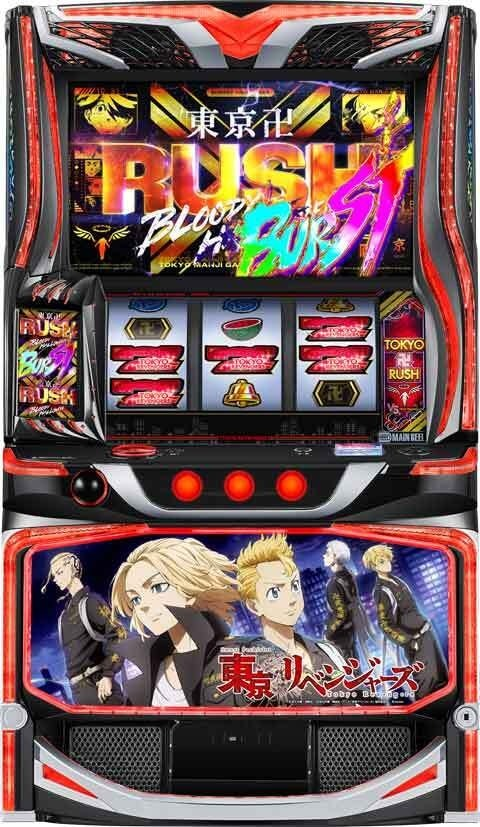
【天井情報】
1190G消化でAT「東卍RUSH」へ。
設定変更時は900Gに短縮。
なお、天井時は前兆を経由せず即告知が発生してATへ。
周期間天井 最大500pt 1周期目 最大200pt
周期天井 最大6周期
東卍チャンスでは天井ゲーム数がリセットされない。
東卍チャンスを4連続スルー後5回目で東卍RUSH濃厚。
【リセット判別】
不明
【有利区間について】
差枚数やエンディングなどで有利区間をリセットすると「天上天下唯我独尊」に突入。
※履歴に関してはカバネリと似てる？、東卍チャンス＝駿城ボーナス、東卍ラッシュ＝エピソードボーナス的な？
※周期抽選はモンキーに似てる、1周期目が短縮天井、モードB＝浜岡モード、チャンス＝モードB（モンキー）、決戦前夜＝優出モード。ただしモンキーの様に600pt到達で次回200ptという仕様は無し。
狙い目
※モードAがかなり辛そうです。モードAの可能性が高いケースでは狙い目より少しボーダーを上げた方が良さそう。例えばボーナス間400ハマっているのに4周期前半といったケースだと周期の進みが遅く、チャンスモードも否定するため、4周期後半または5周期頭から打つところを5周期100または200ptから打つ。またはAT間天井狙い時も100-150Ｇくらいボーダーを上げるなど。
※狙い目はモード、周期、pt不問の狙い目。打ち出す前に周期、ptを確認しボーダー調整する。
https://tokyo-revengersapp.suroschool.jp
期待値検索ツール
pass tokyo-revengers2025
【リセット狙い】
AT間
0スルー
100Gから
1スルー以降
300Gから
※「AT間天井狙い時のボーダー調整目安」を参考にボーダー調整する
【ゲーム数＆周期間天井狙い】
※AT間はサブ液晶で確認可能。周期とptはメダルを入れないと確認出来ない。
AT間
※前回１区間差枚別のデータを追加精査し、平均TYと初当たりが縮まり、明らかな優遇冷遇がなくなる可能性が高くなった。
ただ、差枚別の方がへこめばへこむほど平均TYが低下し、有利区間切断恩恵が受けられにくい状況になり、冷遇状態になる可能性が高い。
以下の様に、有利区間差枚別、スルー別でボーダー調整する
有利区間差枚が-3000未満の範囲
- 0-2スルー：600G〜
- 3スルー：450G〜
- 4スルー：0G〜
有利区間差枚が-3000から500枚の範囲
- 0-2スルー：500G〜
- 3スルー：350G〜
- 4スルー：0G〜
有利区間差枚が501から2000枚の範囲(10/21)
※プラス差枚でリベンジチャンスに入ってない台が条件
- 0-2スルー：400G〜
- 3スルー：250G〜
- 4スルー：0G〜
※スルーとは東卍チャンス(AT間RB)のスルー回数
※「AT間天井狙い時のボーダー調整目安」を参考にボーダー調整する
AT間天井狙い時のボーダー調整目安
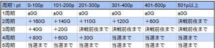
「前回1区間差枚」＝AT獲得枚数−投資枚数（北斗の直近差枚に近い概念）
「前回1区間」とは、前々回AT終了後から前回AT終了までの区間を指す。
データ機のグラフから、またはスロ塾差枚ツールを用いて前回1区間差枚を確認。
https://suroschool.jp/CoinTracker.html
差枚が判断出来ない場合は、+2000から+501枚の狙い目を使用。
下記の狙い目から、「AT間天井狙い時のボーダー調整目安」を参考にボーダー調整する。
前回1区間差枚が+1500から+501枚の範囲
- 0-2スルー：500G〜
- 3スルー：350G〜
- 4スルー：0G〜
前回1区間差枚が+500から+1枚の範囲
- 0-2スルー：450G〜
- 3スルー：300G〜
- 4スルー：0G〜
前回1区間差枚が-0から-1000枚の範囲
- 0-2スルー：400G〜
- 3スルー：250G〜
- 4スルー：0G〜
前回1区間差枚が-1001から-1500枚の範囲(あくまでも現段階)
- 0-2スルー：250G〜
- 3スルー：0G〜
- 4スルー：0G〜
周期別
- 1周期：調整なし
- 2周期：+100G
- 3周期：-20G
- 4周期：+20G
- 5周期：ボーナス or AT当選まで
pt別（2周期以降）
- 0〜100p：+60G
- 101〜200p：+40G
- 201〜300p：+10G
- 301〜400p：+20G
- 401〜500p：-40G
- 501p〜：決戦前夜突入まで
周期間天井（単体での狙い目）
1周期 上位AT後、東卍チャンス後(1スルー以降）100pt から 下位AT後（0スルー）180ptから
2周期 480ptから
3周期 200ptから
4周期 400ptから
【スルー天井狙い】
周期間スルー天井
5周期0ptから or 4周期400ptから
東卍チャンススルー
3スルー ・モードB以上濃厚 AT当選まで ・モードA or 不明 「AT間天井狙い」の項目を参考。
4スルー AT当選まで
【モード毎の押し引き】
モードA この機種の辛い部分。AT間天井狙い時は100Gくらいボーダー上げる感じ？
モードB 次回天国50％なので少し甘め。スルー天井狙いを3スルーから。周期は3周期からなど調整出来そう。1周期が弱いかも？
チャンス 3周期以内に当選かつAT比率高め。ボーナスorAT当選まで打てそう？
天国 ボーナスorAT当選まで。
特殊 1周期から打てそう？2周期から打ち出しが無難？
【モード別のキャラセリフ】暫定
・モードA
タケミチ白とそれ以外で6:4くらいの割合。 千冬白もそこそこ出てくる。
・モードB
タケミチ白とそれ以外で4:6くらいの割合。 タケミチと千冬の比率は同じか少し千冬が多い感じ？ 1.2周期消化してもセリフでA.Bの判断はつかなそう。モードAとの区別は300ゾーン抜けの有無次第。
・チャンスモード
タケミチ白とそれ以外で3:7くらいの割合。 基本千冬で、時々タケミチ、ドラケンが出てくる感じ。ドラケン青複数回、タケミチ白無しとかならチャンスモードが期待出来るかも？
・特殊モード
稀咲が出てくる。それ以外はモードAと似た感じ？稀咲白1回だとそれ単体で特殊モードの判断は危険そう。白2回でそこそこ強く、濃厚とまではいかないが当選まで打った方が良さそう？
【示唆関連の押し引きについて】
当該周期期待大以上、当該AT濃厚、天国濃厚は1回当てたほうが良さそう？
モード示唆については「モード毎の押し引き」を参照。
決戦前夜「赤」発展ハズレは次周期当選濃厚？この場合はもう1周期見た方が良さそう。
AT中のセリフ演出で規定ptの示唆があるため、規定pt示唆が出て一触触発に行く前にAT終了した場合は、示唆によって押し引きが必要になるかも。
【有利区間関連狙い】
不明
やめ時
AT後は基本即やめ。AT中のモードや周期、ポイントは引き継がれるので要確認(モードやPT単体でも狙える場合は遊技)
決戦前夜後次ゲームで復活パターンあるため、抜け後1G回してやめが良さそう。
東卍チャンス／決戦前夜後に「ノイズ」発生＝大チャンス。必ずフォロー
AT終了時に一触即発も東卍チャージも発生しなかった場合＝リベンジフリーズ濃厚、ロングフリーズの可能性あり。必ずフォロー
リベンジチャンス後・上位AT後はノイズが消えるまで、もしくは前兆確認後にやめ
引き戻し発生時はアタックレベルを引き継ぐ可能性あり。東卍アタックがレベル4以上ならフォロー
その他
サブ液晶のタッチタイミング 参考元 かめとうさぎのパチスロチャンネル（Youtube)
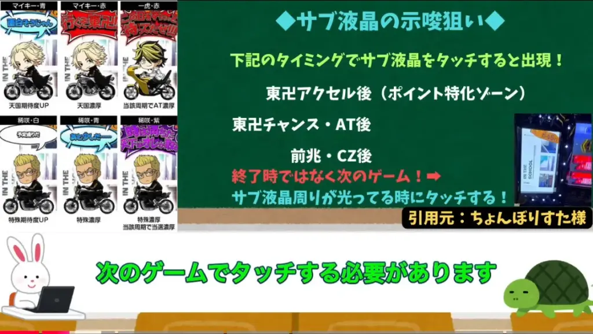
液晶情報の見方 参考元 すろぬー（Xから）
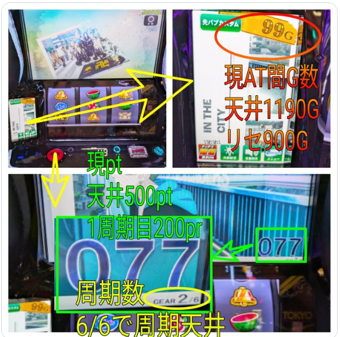
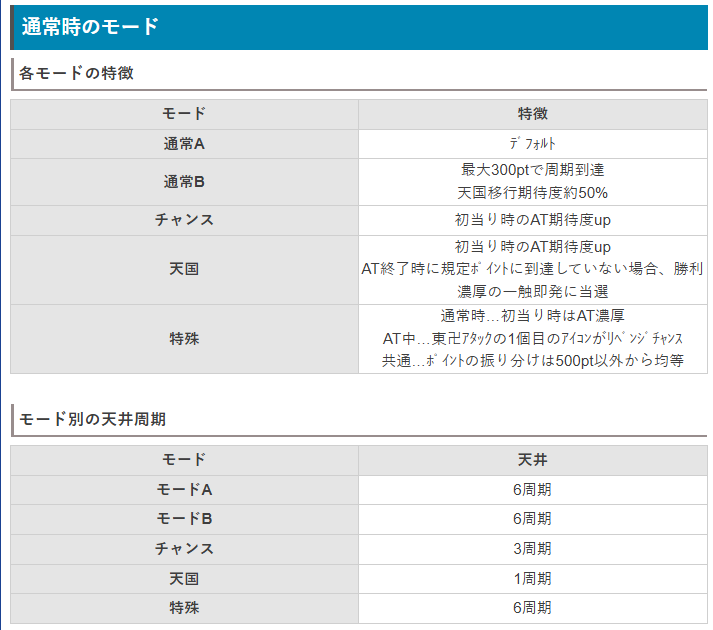
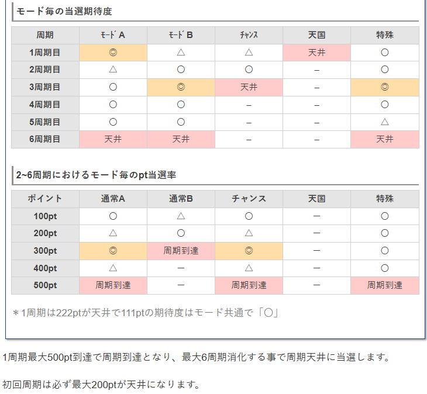
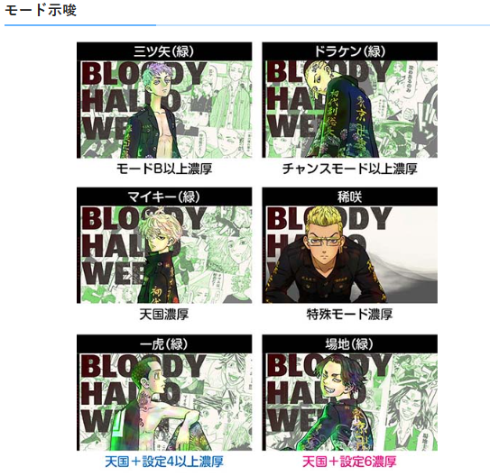
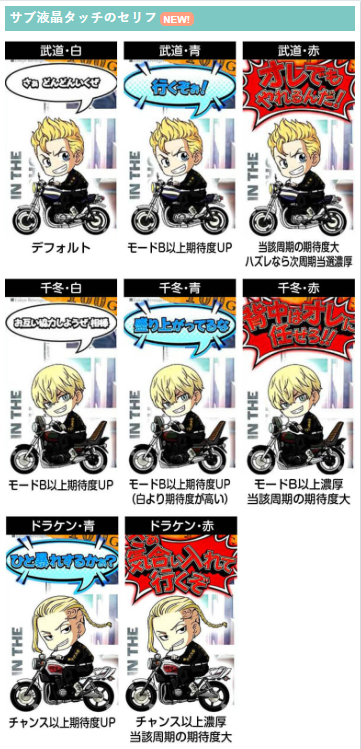
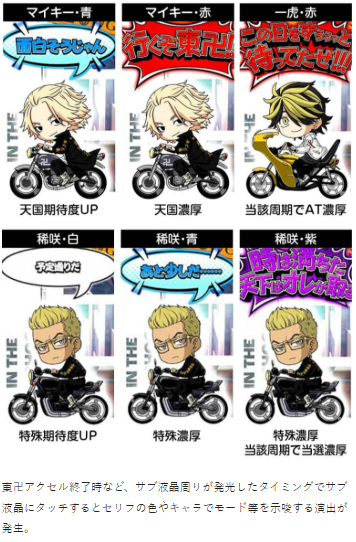
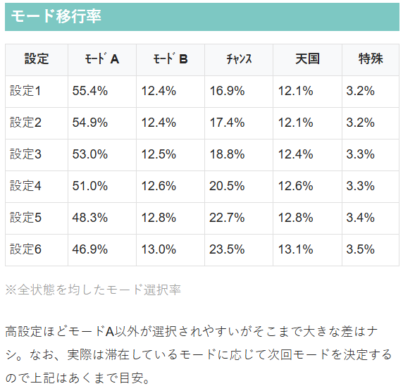
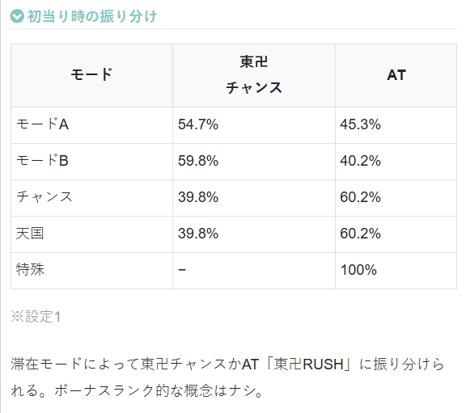
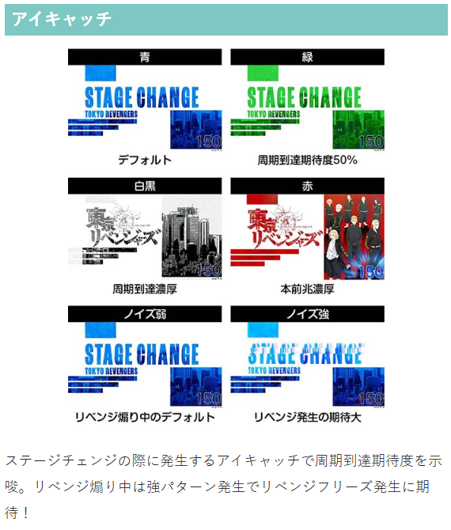
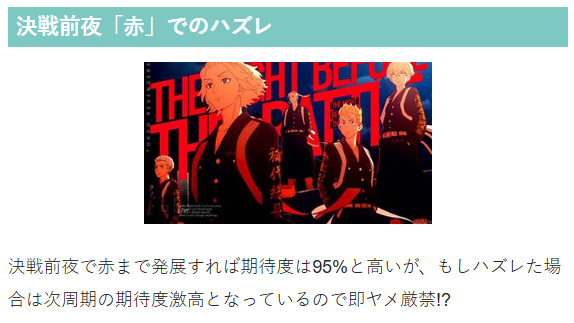
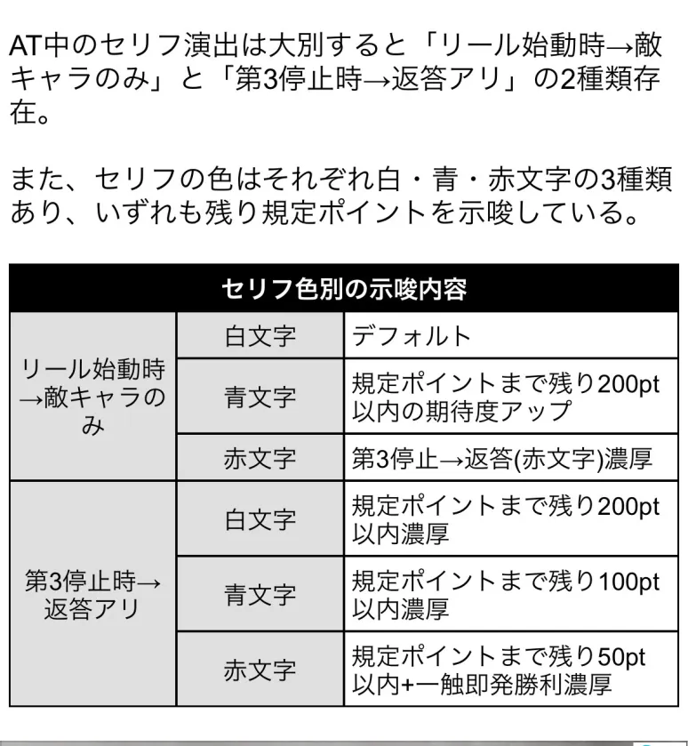
参考元
期待値検索推測ツール
ツールはこちら↓↓
https://tokyo-revengersapp.suroschool.jp
↑↑
画像選択してからの使い方はYouTubeで確認。
1.グラフのはっきりしてる目盛りを目安に最大目盛を決める
2.原点(0)を決める。
4.「ここまで」→前回ATの終了時点
差枚の結果で優遇と冷遇を判別。
基本情報
- メーカー: サミー
- 機械割: 97.8% 〜 114.9%
- 導入開始日: 2025年09月08日（月）
- ゲーム性概要: ●超人気作品「東京リベンジャーズ」とのタイアップ機が登場 ●通常時はポイント契機の周期抽選とレア役契機のCZで初当りを抽選 ●AT「東卍ラッシュ」は純増約3.2枚/Gの差枚数管理型 ●バトル型CZの一触即発勝利で東卍アタックへ突入 ●東卍アタックでは卍目が停止したマスに対応した報酬を獲得 ●リベンジチャンスは上位ATをかけたCZ ●上位ATは純増約8.0枚で、上乗せ性能もパワーアップ ●上位AT後は引き戻し期待度約80%の天上天下唯我独尊へ ●黒い衝動は期待枚数3000枚超を誇る最強特化ゾーン!!


打ち方
打ち方・小役
打ち方（小役狙い）
「最初に狙う絵柄」 左リールにBARを狙う。上段にスイカ停止時以外、中＆右リールはフリー打ちでOKだ。

「スイカ停止時」 中リールをフリー打ち。右リールにスイカを狙う（BAR目安）。スイカを取りこぼしても、2枚の払い出しを受けられるので枚数的な損はない。

「レア役の停止形」

変則押しはNG
通常時、押し順ナビなし時は左リール第1停止での消化を推奨する。
左リール赤7狙い
「最初に狙う絵柄」 左リールに2連赤7を狙い、中下段に2連7が止まれば強レア役の1確となる。

「赤7上段停止時」 リプレイorスイカが成立。中リールをフリー打ちして、右リールにスイカを狙う。

「赤7中下段停止」

チャンス目or強チェリーor中段チェリーが成立。
右リールのどこに卍目が止まるかで成立役を判別可能で、上段ならチャンス目・中段なら強チェリー・下段なら中段チェリーとなる。
「赤7下段停止時」 弱チェリー濃厚。

「リプレイ中段停止時」 ハズレorリプレイorベルor卍目が成立。

中リールBAR狙い（AT中のみ）
「最初に狙う絵柄」 AT中（押し順ナビなし時）は中押しBAR狙いもオススメ。

「BAR上段停止時」 ベル濃厚。

「BAR中段停止時」 チャンス目or強チェリーor中段チェリーが成立。左&右リールにBARを狙って成立役を判別しよう。

「BAR下段停止時」 スイカor弱チェリーが成立。左右リールにBARを狙おう。

「卍上段停止時」 リプレイ濃厚。

「卍中段停止時」 ハズレ濃厚。

卍目のフラグ一覧
| フラグ | 左1st時 | |
|---|---|---|
| フラグ | 1・2・3 | 1・3・2 |
| A1 | ハズレ目 | |
| A2 | ハズレ目 | |
| A3 | ハズレ目 | |
| A4 | ハズレ目 | |
| B1 | 卍目 | |
| B2 | 1枚ベル | |
| B3 | 1枚ベル | |
| B4 | 1枚ベル | |
| B5 | 1枚ベル | |
| フラグ | 中1st時 | |
| フラグ | 2・1・3 | 3・1・2 |
| A1 | ベル （※） | 卍目 |
| A2 | 卍目 | ベル （※） |
| A3 | ハズレ目 | |
| A4 | ハズレ目 | |
| B1 | 1枚ベル | |
| B2 | 卍目 | 1枚ベル |
| B3 | 1枚ベル | 卍目 |
| B4 | 1枚ベル | |
| B5 | 1枚ベル | |
| フラグ | 右1st時 | |
| フラグ | 2・3・1 | 3・2・1 |
| A1 | ハズレ目 | |
| A2 | ハズレ目 | |
| A3 | ベル （※） | 卍目 |
| A4 | 卍目 | ベル （※） |
| B1 | 1枚ベル | |
| B2 | 1枚ベル | |
| B3 | 1枚ベル | |
| B4 | 卍目 | 1枚ベル |
| B5 | 1枚ベル | 卍目 |
※色押し（7orBAR）が正解なら15枚ベル、不正解なら1枚ベルが揃う
卍目のフラグは全部で9種類あり、滞在状態に応じてナビの有無が変化。通常時は押し順ナビが発生しないため、フラグB1が成立した場合のみ卍目が出現する。
滞在状態・成立フラグごとの卍目まとめ
| フラグ | 通常時 |
|---|---|
| フラグA1～A4 | ● ハズレ目が停止 |
| フラグB1～B5 | ● フラグB1成立時のみ 卍目が停止 ● その他は1枚ベルが停止 |
| フラグ | AT準備中 |
| フラグA1～A4 | ● ベルが入賞する押し順ナビもしくは ×・?・?ナビが発生 |
| フラグB1～B5 | ● フラグB1成立時のみ 卍目が停止 ● その他は1枚ベルが停止 |
| フラグ | 東卍チャンス・AT・一触即発・芭流覇羅ステージ中 |
| フラグA1～A4 | ● ベルの押し順ナビが発生、赤7orBARの2択正解で15枚ベルが、不正解で1枚ベルが揃う ※上位AT中やエンディング中はフルナビ |
| フラグB1～B5 | ● 卍目が停止する押し順ナビが発生 |
| フラグ | 東卍チャージ・エピソード・渋谷ジャック中 |
| フラグA1～A2 | ● 中1stナビが発生、 2択正解で卍目 が、不正解で1枚ベルが揃う |
| フラグA3～A4 | ● 右1stナビが発生、 2択正解で卍目 が、不正解で1枚ベルが揃う |
| フラグB1～B5 | ● 卍目が停止する押し順ナビが発生 |
| フラグ | 東卍アタック中 |
| フラグA1～A2 | ● 中1stナビが発生、 2択正解で卍目 が、不正解で1枚ベルが揃う |
| フラグA3～A4 | ● 右1stナビが発生、 2択正解で卍目 が、不正解で1枚ベルが揃う |
| フラグB1～B5 | ● 当該マスがリベンジチャンスor上位ATの場合は 卍目が停止 する押し順ナビが発生 ● 上記以外のマスの場合はベルが停止する押し順ナビが発生 |
合算確率はフラグA1〜A4が1/1.5、フラグB1〜B5は約1/30。
フラグB1〜B5が成立した場合、当該マスがリベンジチャンス（リベンジチャンス獲得後は上位ATマス）なら卍目が停止するナビを出すので必ずリベンジチャンスを獲得。その他のマスの場合はベルが揃うナビを出すので、リベンジチャンス以外を回避できる（フラグの種類を判別することはできない）。 ※押し順ナビを無視した場合を除く
中段チェリー
状況別・中段チェリー成立時の恩恵
| 状況 | 恩恵 |
|---|---|
| 通常時 | ● AT直撃（AT本前兆中はATセットストック獲得!?） |
| 東卍アクセル中 | ● AT直撃 |
| ミッドナイトモード中 | ● 上位ATorロングフリーズ（割合は1：1） |
| 稀咲陰謀中 | ● ロングフリーズ |
| ブレイクチャンス中 | ● ＋300枚 ● 勝利濃厚の一触即発ストック |
| 東卍チャンス中 | ● 上位ATorロングフリーズ（割合は1：1） |
| AT準備中 | ● ＋300枚 ● 勝利濃厚の一触即発ストック |
| AT中 | ● ＋300枚 ● 勝利濃厚の一触即発ストック |
| 上乗せの次ゲーム | ● 日和ってループ |
| 東卍チャージ中 | ● ＋300pt ● 100ptへのベースアップ ● ホールド＋5G ● 勝利濃厚の一触即発ストック |
| 一触即発中 | ● 勝利 ● ATセットストック |
| 東卍アタック中 | ● ATセットストック ● 枚数上乗せ ● リベンジチャンスへのマス書き換えやアタックレベルアップ抽選 |
| ヒートアップ中 | ● ＋300枚 |
| 渋谷ジャック中 | ● ＋300枚 |
| リベンジチャンス中 | ● 上位AT当選（黒い衝動も濃厚!?） |
| 天上天下唯我独尊中 | ● 上位AT当選（黒い衝動も濃厚!?） |
| 上位AT中 | ● ＋300枚 ● 一触即発 |
有利区間の残り差枚数が1400枚以下の場合、フリーズの発生条件を満たしてもフリーズは発生せず、エンディングへ直行する。
解析情報通常時
小役関連
［設定差なし］小役確率
| 役 | 確率 |
|---|---|
| リプレイ | 1/7.3 |
| スイカ | 1/92.3 |
| 弱チェリー | 1/77.1 |
| 強チェリー | 1/399.6 |
| チャンス目Ａ | 1/468.1 |
| チャンス目Ｂ | 1/327.7 |
［設定差なし］卍目確率
| 状態 | 確率 |
|---|---|
| 通常時 | 1/218.5 |
| AT中① | 1/30.0 |
| AT中② | 1/2.7 |
※AT中①…東卍チャンス・東卍ラッシュ・上位AT・一触即発・黒い衝動 ※AT中②…東卍チャージ・エピソード・渋谷ジャック・東卍アタックのリベンジチャンスor上位ATマスのゲーム
東卍アタックのリベンジチャンスor上位AT以外のマス時は卍目確率1/3.0。
共通ベル・中段チェリー確率 ※全状態共通
通常時のレア役合算確率は1/27.7。強レア役合算確率は1/129.0〜1/128.5（中段チェリー確率の分だけ差がある）。
内部状態関連
内部状態概要
| 項目 | 内容 |
|---|---|
| 種類 | 通常・高確の2種類 |
| 高確移行契機 | おもにスイカ・弱チェリー・卍目での抽選 |
| 高確の恩恵 | 東卍アクセル・CZ当選期待度がアップ |
高確移行率
| 役 | 移行率 |
|---|---|
| 卍目 | 9.8% |
| スイカ | 50.0% |
| 弱チェリー | 9.8% |
卍目・スイカ・弱チェリー成立時に高確移行を抽選。高確には約20G滞在する。
モード
モードごとの天井周期
| モード | 天井 |
|---|---|
| 通常A | 6周期 |
| 通常B | 6周期 |
| チャンス | 3周期 |
| 天国 | 1周期 |
| 特殊 | 6周期 |
モードの特徴
| モード | 特徴 |
|---|---|
| 通常A | ● デフォルト |
| 通常B | ● 最大300ptで周期到達 ● 天国移行期待度約50% |
| チャンス | ● 初当り時のAT期待度アップ |
| 天国 | ● 初当り時のAT期待度アップ ● AT終了時に規定ポイントに到達していない場合、勝利濃厚の一触即発に当選 |
| 特殊 | ● 通常時：初当り時はAT濃厚 ● AT中：東卍アタックの1個目のアイコンがリベンジチャンス ● 共通：ポイントの振り分けは500pt以外から均等に選択される |
モードの抽選タイミング
| 状態 | タイミング |
|---|---|
| 初回 | 設定変更時、 リベンジチャンスor天上天下唯我独尊終了時 |
| 通常時 | 東卍チャンスor東卍ラッシュ当選時 |
| AT中 | 東卍アタック当選時 （リベンジで引き戻した場合はモードは引き継ぎ） |
通常時・AT間でモードは再抽選されるが、ポイントは引き継がれる。 上位ATにポイントは存在しないので、上位ATに突入した時点で周期やポイントの表示もなくなる。
モードごとのゾーン表
| 周期 | 通常A | 通常B | チャンス | 天国 | 特殊 |
|---|---|---|---|---|---|
| 1周期 | ◎ | △ | △ | 天井 | 〇 |
| 2周期 | △ | 〇 | 〇 | ー | 〇 |
| 3周期 | 〇 | ◎ | 天井 | ー | ◎ |
| 4周期 | 〇 | 〇 | ー | ー | 〇 |
| 5周期 | 〇 | 〇 | ー | ー | △ |
| 6周期 | 天井 | 天井 | ー | ー | 天井 |
全モードを平均した 1周期目の初当り期待度は約33% 。 AT中は少し期待度が高く、 1周期目の約40%で東卍アタックに当選 する。
モードごとの規定ポイントゾーン表 1周期目
| ポイント | 通常A | 通常B | チャンス | 天国 | 特殊 |
|---|---|---|---|---|---|
| 100pt | 〇 | 〇 | 〇 | 〇 | 〇 |
| 200pt | 周期到達 | 周期到達 | 周期到達 | 周期到達 | 周期到達 |
| 300pt | ー | ー | ー | ー | ー |
| 400pt | ー | ー | ー | ー | ー |
| 500pt | ー | ー | ー | ー | ー |
2～6周期目
| ポイント | 通常A | 通常B | チャンス | 天国 | 特殊 |
|---|---|---|---|---|---|
| 100pt | 〇 | △ | 〇 | ー | 〇 |
| 200pt | △ | 〇 | △ | ー | 〇 |
| 300pt | ◎ | 周期到達 | ◎ | ー | 〇 |
| 400pt | △ | ー | △ | ー | 〇 |
| 500pt | 周期到達 | ー | 周期到達 | ー | 周期到達 |
特殊滞在時
※トータルAT期待度は東卍チャンス中の昇格を含む期待度
通常Bは約50%で次回天国なので、AT当選時は一触即発当選期待度が高い。
モード選択率 （滞在モードを加味した平均値）
滞在しているモードを参照して次回のモードを抽選するため、状況によって移行率は変化する。
［設定変更時・上位AT終了時 （※） ］モード移行率
※上位AT終了時…リベンジチャンス終了時・天上天下唯我独尊終了時
特殊滞在時
※CZ・リベンジによる当選を含まない数値
特殊滞在時
※CZ・リベンジによる当選を含まない数値
周期抽選
周期抽選概要
通常時は毎ゲーム、最低1ptずつ獲得していき、規定ポイントに到達すると決戦前夜（前兆）へ移行して初当りの当否をジャッジ。1周期は最大500ptで、6周期目が天井になる。 東卍アクセル突入でポイント大量獲得のチャンスだ。

周期ポイント
| 項目 | 内容 |
|---|---|
| 獲得ポイント | 1～20pt（1Gあたり） |
| 規定ポイント到達時 | 決戦前夜で抽選結果を告知 |
| 1周期の最大ポイント | 500pt（1周期目は200pt） |
| 天井周期 | 6周期目 |
| 1周期目の特徴 | 200pt以内に決戦前夜突入 |
| その他 | 余ったポイントはATへ持ち越し |
周期到達までの平均ゲーム数は1周期目が約57.5G、2周期目以降は約94.7Gになる。
モードごとの規定ポイント振り分け 1周期目
| ポイント | 通常A | 通常B | チャンス | 天国 | 特殊 |
|---|---|---|---|---|---|
| 100pt | 12.5% | 12.5% | 12.5% | 12.5% | 12.5% |
| 200pt | 87.5% | 87.5% | 87.5% | 87.5% | 87.5% |
| 300pt | ー | ー | ー | ー | ー |
| 400pt | ー | ー | ー | ー | ー |
| 500pt | ー | ー | ー | ー | ー |
2～6周期目
| ポイント | 通常A | 通常B | チャンス | 天国 | 特殊 |
|---|---|---|---|---|---|
| 100pt | 9.8% | 6.3% | 9.8% | ー | 15.6% |
| 200pt | 3.1% | 25.0% | 3.1% | ー | 15.6% |
| 300pt | 43.0% | 68.8% | 34.4% | ー | 15.6% |
| 400pt | 3.1% | ー | 3.1% | ー | 15.6% |
| 500pt | 41.0% | ー | 49.6% | ー | 37.5% |
1周期目は100ptか200ptで周期に到達。 2周期目以降は滞在モードによって規定ポイントの振り分けが変化し、200ptや400ptで周期に到達（決戦前夜突入）した場合は通常Bや特殊モードの可能性がアップする。
東卍アクセル
東卍アクセル概要
通常時のレア役を契機に突入するポイント獲得の特化ゾーン。5GのST型で、リプレイやレア役が成立すると5Gが再セットされる。 レア役はポイント獲得とSTリセットに加え、加算されるポイント数の最低値を上げるベースアップ抽選もあり。ポイントはAT中にも引き継がれるため、大量に獲得したポイントがムダになることはない（AT中はポイントで一触即発を抽選）。

東卍アクセル性能
| 項目 | 内容 |
|---|---|
| 契機 | レア役成立時の抽選 |
| 継続ゲーム数 | 5GのST型 |
| 消化中の抽選 | 毎ゲームポイントを獲得していき、 リプレイ・レア役成立で5Gを再セット |
| レア役成立時 | 獲得ポイントの最低値上昇（ベースアップ）を抽選 |
［STリセット］

［ベースアップ］

加算ポイント振り分け ※ベースポイント5pt時
| ポイント | ハズレ | ベル | リプレイ | 卍目 |
|---|---|---|---|---|
| +5pt | 97.3% | ー | ー | ー |
| +10pt | 1.6% | 88.7% | 88.7% | ー |
| +20pt | 0.4% | 6.3% | 6.3% | ー |
| +30pt | 0.4% | 3.1% | 3.1% | 70.3% |
| +50pt | 0.4% | 1.6% | 1.6% | 25.0% |
| +100pt | ー | 0.4% | 0.4% | 3.1% |
| +200pt | ー | ー | ー | 1.2% |
| +300pt | ー | ー | ー | 0.4% |
| ポイント | スイカ | 弱チェリー | チャンス目 | 強チェリー |
| +5pt | ー | ー | ー | ー |
| +10pt | ー | ー | ー | ー |
| +20pt | ー | ー | ー | ー |
| +30pt | 70.3% | 70.3% | ー | ー |
| +50pt | 25.0% | 25.0% | 75.0% | 50.0% |
| +100pt | 3.1% | 3.1% | 15.6% | 31.3% |
| +200pt | 1.2% | 1.2% | 6.3% | 12.5% |
| +300pt | 0.4% | 0.4% | 3.1% | 6.3% |
※中段チェリーはAT直撃濃厚
ベースアップ振り分け
| 役 | 1段階アップ | 2段階アップ | 3段階アップ |
|---|---|---|---|
| 卍目 | 99.6% | 0.4% | ー |
| スイカ | 99.6% | 0.4% | ー |
| 弱チェリー | 99.6% | 0.4% | ー |
| チャンス目 | ー | 90.2% | 9.8% |
| 強チェリー | ー | 90.2% | 9.8% |
ベースポイントは5pt・10pt・20pt・30pt・50pt・100ptの6種類で、レア役を引くと必ず1段階以上アップする。
CZ
ミッドナイトモード概要
レア役を契機に突入するCZ。毎ゲームの成立役に応じて成功を抽選、フリーズ発生で成功となる。

ミッドナイトモード性能
| 項目 | 内容 |
|---|---|
| 契機 | レア役成立時の抽選 |
| 確率 | 1/1278.4（設定1） |
| 継続ゲーム数 | 10G |
| 消化中の抽選 | 成立役に応じた成功抽選（成功時はフリーズ発生） |
| 成功期待度 | 約50% |
ミッドナイトモード確率
| 設定 | 確率 |
|---|---|
| 1 | 1/1278.4 |
| 2 | 1/1258.6 |
| 3 | 1/1164.5 |
| 4 | 1/1017.7 |
| 5 | 1/1017.7 |
| 6 | 1/982.4 |
「フリーズ演出」

稀咲陰謀概要
成功すればAT濃厚となる上位CZ。成功期待度も約75%と高い。

稀咲陰謀性能
| 項目 | 内容 |
|---|---|
| 契機 | CZ当選時の一部 |
| 確率 | 1/14520.4（設定1） |
| 継続ゲーム数 | 10G |
| 消化中の抽選 | 成立役に応じたAT抽選 |
| 成功期待度 | 約75% |
稀咲陰謀確率
| 設定 | 確率 |
|---|---|
| 1 | 1/14520.4 |
| 2 | 1/12128.4 |
| 3 | 1/9935.2 |
| 4 | 1/6586.5 |
| 5 | 1/6451.1 |
| 6 | 1/5841.0 |
「成功でAT濃厚！」

小役ごとのトータル成功率
| 役 | 成功率 |
|---|---|
| ベル | 25.4% |
| リプレイ | 25.4% |
| 卍目 | 50.0% |
| スイカ | 50.0% |
| 弱チェリー | 50.0% |
| チャンス目 | 100% |
| 強チェリー | 100% |
| 中段チェリー | 100% |
成功率詳細
| 役 | モード依存の 初当り | AT | 上位AT | フリーズ |
|---|---|---|---|---|
| ベル | 22.3% | 2.7% | 0.4% | ー |
| リプレイ | 22.3% | 2.7% | 0.4% | ー |
| 卍目 | 40.2% | 9.4% | 0.4% | ー |
| スイカ | 40.2% | 9.4% | 0.4% | ー |
| 弱チェリー | 40.2% | 9.4% | 0.4% | ー |
| チャンス目 | 50.0% | 48.8% | 0.8% | 0.4% |
| 強チェリー | ー | 98.0% | 1.6% | 0.4% |
| 中段チェリー | ー | ー | 50.0% | 50.0% |
モード依存の初当りに当選した場合、滞在モードに応じて東卍チャンスorATを振り分け。フリーズ当選時は次ゲームでロングフリーズが発生する。
東卍チャンス以上非当選時・リールロック段階割合
| 役 | 1段階 | 2段階 | 3段階 |
|---|---|---|---|
| ベル | 68.8% | 31.3% | ー |
| リプレイ | 68.8% | 31.3% | ー |
| 卍目 | ー | 100% | ー |
| スイカ | ー | 100% | ー |
| 弱チェリー | ー | 100% | ー |
| チャンス目 | ー | ー | ー |
| 強チェリー | ー | ー | ー |
| 中段チェリー | ー | ー | ー |
東卍チャンス以上当選時・リールロック段階割合
| 役 | 1段階 | 2段階 | 3段階 |
|---|---|---|---|
| ベル | 9.4% | 19.9% | 70.7% |
| リプレイ | 9.4% | 19.9% | 70.7% |
| 卍目 | 3.1% | 25.0% | 71.9% |
| スイカ | 3.1% | 25.0% | 71.9% |
| 弱チェリー | 3.1% | 25.0% | 71.9% |
| チャンス目 | ー | ー | 100% |
| 強チェリー | ー | ー | 100% |
| 中段チェリー | ー | ー | 100% |
小役・リールロック段階ごとの成功期待度
| リールロック | ベル | リプレイ | 卍目 | スイカ |
|---|---|---|---|---|
| １段階発生時 | 25.4% | 25.4% | 50.0% | 50.0% |
| １段階終了時 | 4.4% | 4.4% | 100% | 100% |
| ２段階発生時 | 49.7% | 49.7% | 49.2% | 49.2% |
| ２段階終了時 | 17.8% | 17.8% | 20.0% | 20.0% |
| ３段階発生時 | 100% | 100% | 100% | 100% |
| リールロック | 弱チェリー | チャンス目 | 強チェリー | 中段チェリー |
| １段階発生時 | 50.0% | 100% | 100% | 100% |
| １段階終了時 | 100% | ー | ー | ー |
| ２段階発生時 | 49.2% | 100% | 100% | 100% |
| ２段階終了時 | 20.0% | ー | ー | ー |
| ３段階発生時 | 100% | 100% | 100% | 100% |
リールロックが3段階目に到達で成功濃厚。小役成立時は1段階以上、レア役成立時は2段階以上濃厚で、1段階のみでレア役が揃えば成功濃厚だ。
「違和感スタート」 左リールから回転開始した場合はAT以上の、右リールから開始した場合は上位AT以上の0確！
稀咲陰謀成功率
| 役 | AT | 上位AT | フリーズ | トータル |
|---|---|---|---|---|
| ハズレ | 0.4% | ー | ー | 0.4% |
| ベル | 49.6% | 0.4% | ー | 50.0% |
| リプレイ | 49.6% | 0.4% | ー | 50.0% |
| 卍目 | 94.9% | 4.7% | 0.4% | 100% |
| スイカ | 94.9% | 4.7% | 0.4% | 100% |
| 弱チェリー | 94.9% | 4.7% | 0.4% | 100% |
| チャンス目 | 87.5% | 10.9% | 1.6% | 100% |
| 強チェリー | 75.0% | 21.9% | 3.1% | 100% |
| 中段チェリー | ー | ー | 100% | 100% |
成功時はAT以上濃厚。上位ATへ直行する割合もミッドナイトモードより多い。
前兆
本前兆中のレア役成立時の抽選内容
| 前兆種別 | 抽選内容 |
|---|---|
| 東卍チャンス | ATへの昇格抽選 |
| AT | ATのセットストック抽選 |
本前兆のゲーム数
| 前兆種別 | ゲーム数 |
|---|---|
| 東卍アクセル | 4～8G |
| ミッドナイトモード | 4～9G |
| 稀咲陰謀 | 4～9G |
CZ・AT当選率
［弱チェリー］東卍アクセル・CZ当選率 通常滞在時
| 設定 | 東卍アクセル | ミッドナイトモード | 稀咲陰謀 |
|---|---|---|---|
| 1 | 33.2% | 一 | 一 |
| 2 | 33.2% | 一 | 一 |
| 3 | 33.2% | 一 | 一 |
| 4 | 33.2% | 一 | 一 |
| 5 | 33.2% | 一 | 一 |
| 6 | 33.2% | 一 | 一 |
高確滞在時
| 設定 | 東卍アクセル | ミッドナイトモード | 稀咲陰謀 |
|---|---|---|---|
| 1 | 62.5% | 一 | 一 |
| 2 | 62.5% | 一 | 一 |
| 3 | 62.5% | 一 | 一 |
| 4 | 62.5% | 一 | 一 |
| 5 | 62.5% | 一 | 一 |
| 6 | 62.5% | 一 | 一 |
［スイカ］東卍アクセル・CZ当選率 通常滞在時
| 設定 | 東卍アクセル | ミッドナイトモード | 稀咲陰謀 |
|---|---|---|---|
| 1 | 1.6% | 一 | 一 |
| 2 | 1.6% | 一 | 一 |
| 3 | 1.6% | 一 | 一 |
| 4 | 1.6% | 一 | 一 |
| 5 | 1.6% | 一 | 一 |
| 6 | 1.6% | 一 | 一 |
高確滞在時
| 設定 | 東卍アクセル | ミッドナイトモード | 稀咲陰謀 |
|---|---|---|---|
| 1 | 9.8% | 一 | 一 |
| 2 | 9.8% | 一 | 一 |
| 3 | 9.8% | 一 | 一 |
| 4 | 9.8% | 一 | 一 |
| 5 | 9.8% | 一 | 一 |
| 6 | 9.8% | 一 | 一 |
［チャンス目］東卍アクセル・CZ当選率 通常滞在時
| 設定 | 東卍アクセル | ミッドナイトモード | 稀咲陰謀 |
|---|---|---|---|
| 1 | 95.3% | 4.7% | 一 |
| 2 | 94.9% | 5.1% | 一 |
| 3 | 93.0% | 7.0% | 一 |
| 4 | 89.1% | 10.9% | 一 |
| 5 | 88.7% | 11.3% | 一 |
| 6 | 87.5% | 12.5% | 一 |
高確滞在時
| 設定 | 東卍アクセル | ミッドナイトモード | 稀咲陰謀 |
|---|---|---|---|
| 1 | 68.8% | 31.3% | 一 |
| 2 | 68.8% | 31.3% | 一 |
| 3 | 68.8% | 31.3% | 一 |
| 4 | 68.8% | 31.3% | 一 |
| 5 | 68.8% | 31.3% | 一 |
| 6 | 68.8% | 31.3% | 一 |
［強チェリー］東卍アクセル・CZ当選率 通常滞在時
| 設定 | 東卍アクセル | ミッドナイトモード | 稀咲陰謀 |
|---|---|---|---|
| 1 | 79.7% | 20.3% | 一 |
| 2 | 79.7% | 20.3% | 一 |
| 3 | 79.7% | 20.3% | 一 |
| 4 | 79.7% | 20.3% | 一 |
| 5 | 79.7% | 20.3% | 一 |
| 6 | 79.7% | 20.3% | 一 |
高確滞在時
| 設定 | 東卍アクセル | ミッドナイトモード | 稀咲陰謀 |
|---|---|---|---|
| 1 | 50.0% | 50.0% | 一 |
| 2 | 50.0% | 50.0% | 一 |
| 3 | 50.0% | 50.0% | 一 |
| 4 | 50.0% | 50.0% | 一 |
| 5 | 50.0% | 50.0% | 一 |
| 6 | 50.0% | 50.0% | 一 |
［卍目］東卍アクセル・CZ当選率 通常滞在時
| 設定 | 東卍アクセル | ミッドナイトモード | 稀咲陰謀 |
|---|---|---|---|
| 1 | 32.8% | 一 | 0.8% |
| 2 | 32.8% | 一 | 1.2% |
| 3 | 32.8% | 一 | 1.6% |
| 4 | 32.8% | 一 | 2.3% |
| 5 | 32.8% | 一 | 2.3% |
| 6 | 32.8% | 一 | 2.7% |
高確滞在時
| 設定 | 東卍アクセル | ミッドナイトモード | 稀咲陰謀 |
|---|---|---|---|
| 1 | 56.3% | 一 | 9.8% |
| 2 | 56.3% | 一 | 10.2% |
| 3 | 56.3% | 一 | 11.7% |
| 4 | 56.3% | 一 | 18.0% |
| 5 | 56.3% | 一 | 18.8% |
| 6 | 56.3% | 一 | 20.3% |
チャンス目・強チェリーは東卍アクセルorミッドナイトモード濃厚。通常滞在時は高設定ほどチャンス目契機のミッドナイトモードに当選しやすい。
フリーズ
ロングフリーズ動画
CZ中・東卍チャンス中の中段チェリー成立時などに、フリーズ発生の可能性あり。 エピソードを消化後、黒い衝動を経由して上位ATへ突入。 有利区間の残り差枚数が1400枚以下の状態でロングフリーズの発生条件を満たした場合（CZ中の中段チェリーなど）、フリーズは発生せず、エンディングへ直行する。
その他
設定6の勝率
設定6の勝率は約80%と高いので、安定したプラス収支に期待することができる。
解析情報ボーナス時
東卍チャンス
東卍チャンス概要
7・7・BAR揃いは東卍チャンス。消化中はレア役でATへの昇格が抽選される。 AT抽選のほかに東卍アクセル抽選もあるため、東卍チャンス終了→東卍アクセル→即規定ポイント到達といったケースもある。東卍チャンスでは天井までのゲーム数やポイントがクリアされない。

東卍チャンス性能
| 項目 | 内容 |
|---|---|
| 契機 | 初当り時の一部（7・7・BAR） |
| 継続ゲーム数 | 20G |
| 1Gあたりの純増 | 約3.2枚 |
| 消化中の抽選 | AT抽選、東卍アクセルストック抽選、 ロングフリーズ抽選 |
| 終了後 | 通常時へ （通常時に戻った後、リベンジ発生でAT突入） |
| その他 | 天井ゲーム数や余ったポイントは引き継ぎ |
「リベンジ」 東卍チャンス終了後にリベンジが発生すればAT突入濃厚。実戦上は東卍チャンス終了から数ゲーム消化後に発生していたので、即ヤメは控えたい。ポイント表示部分にノイズがかかっている間は、リベンジ発生の可能性あり!?


東卍チャンス中の各種当選率（設定1）
| 役 | 東卍 アクセル | AT | 上位AT | フリーズ |
|---|---|---|---|---|
| 卍目 | 50.0% | 10.2% | ー | ー |
| スイカ | 50.0% | 10.2% | ー | ー |
| 弱チェリー | 50.0% | 10.2% | ー | ー |
| チャンス目 | 66.8% | 31.3% | 1.6% | 0.4% |
| 強チェリー | 30.1% | 66.4% | 3.1% | 0.4% |
| 中段チェリー | ー | ー | 50.0% | 50.0% |
強レア役は東卍アクセル以上当選濃厚。中段チェリーが成立すれば上位ATorフリーズのいずれかが濃厚となる。
［卍目］当選率詳細
| 設定 | 東卍アクセル | AT |
|---|---|---|
| 1 | 50.0% | 10.2% |
| 2 | 50.0% | 10.2% |
| 3 | 50.0% | 10.2% |
| 4 | 50.0% | 10.2% |
| 5 | 50.0% | 10.2% |
| 6 | 50.0% | 10.2% |
リベンジ
リベンジ概要
前兆ステージやAT終了後に発生する可能性がある復活要素。液晶右下のポイント表示部分にノイズが走っている間は、リベンジ発生に期待できる。 リベンジチャンス終了後や天上天下唯我独尊終了後に発生した場合は、上位ATへ復帰！

※必ずノイズが発生するわけではない
リベンジ発生タイミングごとの復帰先
| タイミング | 復帰先 |
|---|---|
| 決戦前夜終了後 | 東卍ラッシュへ |
| 東卍チャンス終了後 | 東卍ラッシュへ |
| 東卍ラッシュ終了後 | 東卍ラッシュへ |
| リベンジチャンス終了後 | 東卍ラッシュバーストへ |
| 天上天下唯我独尊終了後 | 東卍ラッシュバーストへ |
まれにではあるが、リベンジからロングフリーズが発生することもある。リベンジチャンス終了後よりも、天上天下唯我独尊終了後の方がリベンジ発生期待度は高い。
リベンジ＆ロングフリーズ発生率
決戦前夜終了時の特徴
3・4・5周期目スルー時は ノイズ発生率・リベンジ発生率ともに 高設定ほど高い
3・4・5周期目スルー時は ノイズが発生した時点で リベンジ発生期待度50%
リベンジ発生時は直前の連続演出をやり直す
連続演出最終ゲームの第3停止ボタンを離したタイミングで リベンジの有無・成否が抽選される
［決戦前夜終了時］リベンジ＆フリーズ発生率 1周期目・2周期目スルー時
| 設定 | 非発生 | ノイズのみ発生 | リベンジ発生 |
|---|---|---|---|
| 1 | 99.6% | ー | 0.4% |
| 2 | 99.6% | ー | 0.4% |
| 3 | 99.6% | ー | 0.4% |
| 4 | 99.6% | ー | 0.4% |
| 5 | 99.6% | ー | 0.4% |
| 6 | 99.6% | ー | 0.4% |
5周期目スルー時
東卍チャンス終了時の特徴
2・3スルー時のリベンジ発生率は 高設定ほど高い
決戦前夜終了後とは異なり、ノイズのみの発生率は全設定共通
2スルー目以降はロングフリーズの可能性あり （発生率は全設定共通）
東卍チャンス最終ゲームの第3停止ボタンを離したタイミングで リベンジの有無・成否が抽選される
［東卍チャンス終了時］リベンジ＆ロングフリーズ発生率 1スルー時
| 設定 | 非発生 | ノイズのみ 発生 | リベンジ 発生 | ロングフリーズ 発生 |
|---|---|---|---|---|
| 1 | 94.9% | 3.1% | 2.0% | ー |
| 2 | 94.9% | 3.1% | 2.0% | ー |
| 3 | 94.9% | 3.1% | 2.0% | ー |
| 4 | 94.9% | 3.1% | 2.0% | ー |
| 5 | 94.9% | 3.1% | 2.0% | ー |
| 6 | 94.9% | 3.1% | 2.0% | ー |
4スルー時
| 設定 | 非発生 | ノイズのみ 発生 | リベンジ 発生 | ロングフリーズ 発生 |
|---|---|---|---|---|
| 1 | 87.5% | 6.3% | 4.7% | 1.6% |
| 2 | 87.5% | 6.3% | 4.7% | 1.6% |
| 3 | 87.5% | 6.3% | 4.7% | 1.6% |
| 4 | 87.5% | 6.3% | 4.7% | 1.6% |
| 5 | 87.5% | 6.3% | 4.7% | 1.6% |
| 6 | 87.5% | 6.3% | 4.7% | 1.6% |
東卍ラッシュ終了時の特徴
東卍チャージにも一触即発にも当選しなかった場合、 リベンジ濃厚かつ、ロングフリーズ期待度も高い
東卍チャージor一触即発当選後は高設定ほどリベンジが発生しやすい
［東卍ラッシュ終了時］リベンジ＆ロングフリーズ発生率 東卍チャージor一触即発のどちらも非当選で終了後
| 設定 | 非発生 | ノイズのみ発生 | リベンジ発生 | ロングフリーズ 発生 |
|---|---|---|---|---|
| 1 | ー | ー | 96.9% | 3.1% |
| 2 | ー | ー | 96.9% | 3.1% |
| 3 | ー | ー | 96.9% | 3.1% |
| 4 | ー | ー | 96.9% | 3.1% |
| 5 | ー | ー | 96.9% | 3.1% |
| 6 | ー | ー | 96.9% | 3.1% |
ブレイクチャンス
ブレイクチャンス概要
東卍ラッシュの初期枚数を決める3Gの特化ゾーン。リプレイ成立で＋100枚以上濃厚、レア役なら大量上乗せに期待できる。


上乗せ枚数振り分け
| 上乗せ | ハズレ | ベル | リプレイ |
|---|---|---|---|
| +50枚 | 99.6% | 75.0% | ー |
| +100枚 | 0.4% | 24.2% | 98.0% |
| +200枚 | ー | 0.4% | 1.6% |
| +300枚 | ー | 0.4% | 0.4% |
| 上乗せ | 卍目 | スイカ | 弱チェリー |
| +50枚 | ー | ー | ー |
| +100枚 | 75.0% | 75.0% | 75.0% |
| +200枚 | 24.6% | 24.6% | 24.6% |
| +300枚 | 0.4% | 0.4% | 0.4% |
| 上乗せ | チャンス目 | 強チェリー | 中段チェリー |
| +50枚 | ー | ー | ー |
| +100枚 | ー | ー | ー |
| +200枚 | 87.5% | 75.0% | ー |
| +300枚 | 12.5% | 25.0% | 100% |
毎ゲーム＋50枚以上を獲得。中段チェリーは＋300枚に加え、勝利濃厚の一触即発をストックする。
東卍ラッシュ（AT）
東卍ラッシュ概要
差枚数管理型のATで、初期枚数はブレイクチャンスで決定。消化中は差枚数上乗せや一触即発を抽選する。AT中も通常時と同様にポイントを獲得していき、規定ポイントに到達すれば一触即発突入濃厚だ。

東卍ラッシュ性能
| 項目 | 内容 |
|---|---|
| 契機 | 初当り時の一部（7揃い） |
| 初期枚数 | ブレイクチャンスで決定 |
| 1Gあたりの純増 | 約3.2枚 |
| 消化中の抽選 | 枚数上乗せ、東卍チャージ、超高確移行、一触即発 |
リープ上乗せ＆日和ってループ
AT中の上乗せ当選後、次ゲームでレア役を引けば獲得した上乗せが3桁枚数に昇格するリープ上乗せが発生。さらに、リープ上乗せ時の一部で3桁上乗せが約80%でループする日和ってループに突入する。 レア役確率は約1/15（卍目含む）。


リープ上乗せ発生時の枚数期待度
| 項目 | 期待度 |
|---|---|
| 元の上乗せ枚数 | 20枚＜30枚＜50枚…＜300枚 |
| 発生契機役 | 卍目・スイカ・弱チェリー＜チャンス目 ＜強チェリー＜中段チェリー |
上乗せの次ゲームで引いたレア役の種類と元の上乗せ枚数に応じて、リープ上乗せによる昇格枚数の期待度が変化する（リープ上乗せでの最大上乗せ枚数は1300枚）。
日和ってループ発生期待度
| 項目 | 期待度 |
|---|---|
| 発生契機役 | 卍目＜スイカ・弱チェリー＜チャンス目 ＜強チェリー＜中段チェリー |
「日和ってループ」

AT中のリープ上乗せor日和ってループ発生時および 上位AT中の日和ってループ発生時の上乗せ枚数振り分け ＋20枚or＋30枚後
| 上乗せ | 弱レア役 | チャンス目 | 強チェリー | 中段チェリー |
|---|---|---|---|---|
| ＋100枚 | 84.4% | 37.5% | ー | ー |
| ＋200枚 | 12.5% | 37.5% | 46.9% | ー |
| ＋300枚 | 3.1% | 23.4% | 46.9% | 50.0% |
| ＋400枚 | ー | ー | ー | ー |
| ＋500枚 | ー | 1.6% | 6.3% | 50.0% |
| ＋600枚 | ー | ー | ー | ー |
| ＋700枚 | ー | ー | ー | ー |
| ＋800枚 | ー | ー | ー | ー |
| ＋900枚 | ー | ー | ー | ー |
| ＋1000枚 | ー | ー | ー | ー |
| ＋1100枚 | ー | ー | ー | ー |
| ＋1200枚 | ー | ー | ー | ー |
| ＋1300枚 | ー | ー | ー | ー |
＋50枚後
| 上乗せ | 弱レア役 | チャンス目 | 強チェリー | 中段チェリー |
|---|---|---|---|---|
| ＋100枚 | ー | ー | ー | ー |
| ＋200枚 | 84.0% | 73.4% | 46.9% | ー |
| ＋300枚 | 12.5% | 23.4% | 46.9% | ー |
| ＋400枚 | 3.1% | ー | ー | ー |
| ＋500枚 | 0.4% | 3.1% | 6.3% | 50.0% |
| ＋600枚 | ー | ー | ー | ー |
| ＋700枚 | ー | ー | ー | 25.0% |
| ＋800枚 | ー | ー | ー | ー |
| ＋900枚 | ー | ー | ー | 23.8% |
| ＋1000枚 | ー | ー | ー | 0.4% |
| ＋1100枚 | ー | ー | ー | 0.4% |
| ＋1200枚 | ー | ー | ー | 0.4% |
| ＋1300枚 | ー | ー | ー | ー |
＋100枚後
| 上乗せ | 弱レア役 | チャンス目 | 強チェリー | 中段チェリー |
|---|---|---|---|---|
| ＋100枚 | ー | ー | ー | ー |
| ＋200枚 | 73.4% | ー | ー | ー |
| ＋300枚 | 20.3% | 87.9% | 81.6% | ー |
| ＋400枚 | 5.9% | 6.3% | 9.4% | ー |
| ＋500枚 | 0.4% | 3.1% | 6.3% | ー |
| ＋600枚 | ー | 0.4% | 0.4% | 50.0% |
| ＋700枚 | ー | 0.4% | 0.4% | 12.5% |
| ＋800枚 | ー | 0.4% | 0.4% | 12.5% |
| ＋900枚 | ー | 0.4% | 0.4% | 12.5% |
| ＋1000枚 | ー | 0.4% | 0.4% | 11.7% |
| ＋1100枚 | ー | 0.4% | 0.4% | 0.4% |
| ＋1200枚 | ー | 0.4% | 0.4% | 0.4% |
| ＋1300枚 | ー | ー | ー | ー |
＋200枚後
| 上乗せ | 弱レア役 | チャンス目 | 強チェリー | 中段チェリー |
|---|---|---|---|---|
| ＋100枚 | ー | ー | ー | ー |
| ＋200枚 | ー | ー | ー | ー |
| ＋300枚 | 73.4% | ー | ー | ー |
| ＋400枚 | 20.3% | 88.3% | 82.0% | ー |
| ＋500枚 | 5.9% | 6.3% | 9.4% | ー |
| ＋600枚 | 0.4% | 3.1% | 6.3% | ー |
| ＋700枚 | ー | 0.4% | 0.4% | 50.0% |
| ＋800枚 | ー | 0.4% | 0.4% | 12.5% |
| ＋900枚 | ー | 0.4% | 0.4% | 12.5% |
| ＋1000枚 | ー | 0.4% | 0.4% | 12.5% |
| ＋1100枚 | ー | 0.4% | 0.4% | 12.1% |
| ＋1200枚 | ー | 0.4% | 0.4% | 0.4% |
| ＋1300枚 | ー | ー | ー | ー |
＋300枚後
| 上乗せ | 弱レア役 | チャンス目 | 強チェリー | 中段チェリー |
|---|---|---|---|---|
| ＋100枚 | ー | ー | ー | ー |
| ＋200枚 | ー | ー | ー | ー |
| ＋300枚 | ー | ー | ー | ー |
| ＋400枚 | 73.4% | ー | ー | ー |
| ＋500枚 | 20.3% | 88.3% | 82.0% | ー |
| ＋600枚 | 5.9% | 6.3% | 9.4% | ー |
| ＋700枚 | 0.4% | 3.1% | 6.3% | ー |
| ＋800枚 | ー | 0.4% | 0.4% | 50.0% |
| ＋900枚 | ー | 0.4% | 0.4% | 12.5% |
| ＋1000枚 | ー | 0.4% | 0.4% | 12.5% |
| ＋1100枚 | ー | 0.4% | 0.4% | 12.5% |
| ＋1200枚 | ー | 0.4% | 0.4% | 12.5% |
| ＋1300枚 | ー | ー | ー | ー |
※弱レア役…卍目、スイカ、弱チェリー
上位AT中・リープ上乗せ発生時の上乗せ枚数振り分け ＋50枚後
| 上乗せ | 弱レア役 | チャンス目 | 強チェリー | 中段チェリー |
|---|---|---|---|---|
| ＋100枚 | ー | ー | ー | ー |
| ＋200枚 | ー | ー | ー | ー |
| ＋300枚 | 84.0% | 73.4% | 46.9% | ー |
| ＋400枚 | 12.5% | 23.4% | 46.9% | ー |
| ＋500枚 | 3.1% | ー | ー | ー |
| ＋600枚 | 0.4% | 3.1% | 6.3% | 50.0% |
| ＋700枚 | ー | ー | ー | ー |
| ＋800枚 | ー | ー | ー | 25.0% |
| ＋900枚 | ー | ー | ー | ー |
| ＋1000枚 | ー | ー | ー | 24.2% |
| ＋1100枚 | ー | ー | ー | 0.4% |
| ＋1200枚 | ー | ー | ー | 0.4% |
| ＋1300枚 | ー | ー | ー | ー |
＋300枚後
| 上乗せ | 弱レア役 | チャンス目 | 強チェリー | 中段チェリー |
|---|---|---|---|---|
| ＋100枚 | ー | ー | ー | ー |
| ＋200枚 | ー | ー | ー | ー |
| ＋300枚 | ー | ー | ー | ー |
| ＋400枚 | ー | ー | ー | ー |
| ＋500枚 | 73.4% | ー | ー | ー |
| ＋600枚 | 20.3% | 88.3% | 82.0% | ー |
| ＋700枚 | 5.9% | 6.3% | 9.4% | ー |
| ＋800枚 | 0.4% | 3.1% | 6.3% | ー |
| ＋900枚 | ー | 0.4% | 0.4% | 50.0% |
| ＋1000枚 | ー | 0.4% | 0.4% | 12.5% |
| ＋1100枚 | ー | 0.4% | 0.4% | 12.5% |
| ＋1200枚 | ー | 0.4% | 0.4% | 12.5% |
| ＋1300枚 | ー | 0.4% | 0.4% | 12.5% |
※弱レア役…卍目、スイカ、弱チェリー
（上位）AT中・日和ってループ中の上乗せ枚数振り分け
| 上乗せ | レア役以外 | 弱レア役 | チャンス目 | |
|---|---|---|---|---|
| ナシ（終了） | 21.1% | ー | ー | |
| ＋100枚 | 78.9% | 84.4% | ー | |
| ＋200枚 | ー | 12.5% | 90.2% | |
| ＋300枚 | ー | 3.1% | 6.3% | |
| ＋400枚 | ー | ー | 1.6% | |
| ＋500枚 | ー | ー | 0.4% | |
| ＋600枚 | ー | ー | 0.4% | |
| ＋700枚 | ー | ー | 0.4% | |
| ＋800枚 | ー | ー | 0.4% | |
| ＋900枚 | ー | ー | 0.4% | |
| 上乗せ | 強チェリー | 中段チェリー | ||
| ナシ（終了） | ー | ー | ||
| ＋100枚 | ー | ー | ||
| ＋200枚 | 85.5% | ー | ||
| ＋300枚 | 9.4% | ー | ||
| ＋400枚 | 3.1% | ー | ||
| ＋500枚 | 0.4% | 50.0% | ||
| ＋600枚 | 0.4% | 12.5% | ||
| ＋700枚 | 0.4% | 12.5% | ||
| ＋800枚 | 0.4% | 12.5% | ||
| ＋900枚 | 0.4% | 12.5% |
※弱レア役…卍目、スイカ、弱チェリー
芭流覇羅ステージ
スイカ、チャンス目、強チェリーの一部で突入する超高確ステージ。滞在ゲーム数は10G＋αで、レア役を引けば勝利濃厚の一触即発に当選する（移行あおり中のレア役も有効）。

芭流覇羅ステージ性能
| 項目 | 内容 |
|---|---|
| 契機 | スイカ・チャンス目・強チェリーでの抽選 |
| 継続ゲーム数 | 13G |
| 消化中の抽選 | レア役成立で勝利濃厚の一触即発に当選 |
| 成功期待度 | 約59% |
芭流覇羅ステージの継続ゲーム数は13Gなのだが、この13Gには移行までの前兆ゲーム数も含んでいる。当選時は最大3Gの前兆を経由するため、見た目上、芭流覇羅ステージに滞在するゲームは13G未満。 本前兆中も芭流覇羅ステージ中と同じ抽選がおこなわれる ので、本前兆中にレア役を引いた場合は芭流覇羅ステージを経由せず、いきなり勝利濃厚の一触即発へ突入する。
※レア役確率は約1/15
枚数上乗せ当選率
| 役 | 当選率 |
|---|---|
| 卍目 | ー |
| スイカ | 2.3% |
| 弱チェリー | 31.6% |
| チャンス目 | 100% |
| 強チェリー | 100% |
| 中段チェリー | 100% |
※中段チェリーは勝利濃厚の一触即発ストックも獲得
上乗せに当選した後に、上乗せ枚数を抽選する。
上乗せ枚数振り分け
| 上乗せ | その他 | スイカ | 弱チェリー |
|---|---|---|---|
| +20枚 | ー | ー | 85.2% |
| +30枚 | ー | ー | 10.5% |
| +50枚 | ー | ー | 2.7% |
| +100枚 | ー | 50.0% | 0.8% |
| +200枚 | ー | 25.0% | 0.4% |
| +300枚 | ー | 25.0% | 0.4% |
| 上乗せ | チャンス目 | 強チェリー | 中段チェリー |
| +20枚 | 73.8% | ー | ー |
| +30枚 | 17.6% | 82.4% | ー |
| +50枚 | 6.6% | 12.9% | ー |
| +100枚 | 1.6% | 3.1% | ー |
| +200枚 | 0.4% | 0.8% | ー |
| +300枚 | 0.4% | 0.4% | 100% |
平均上乗せ枚数
| 役 | 枚数 |
|---|---|
| その他 | ー |
| スイカ | ＋175.0枚 |
| 弱チェリー | ＋24.3枚 |
| チャンス目 | ＋26.9枚 |
| 強チェリー | ＋37.0枚 |
| 中段チェリー | ＋300.0枚 |
上乗せの次ゲームでレア役成立時 リープ上乗せ・日和ってループの割合
| 役 | リープ上乗せのみ発生 | 日和ってループも発生 |
|---|---|---|
| 卍目 | 96.9% | 3.1% |
| スイカ | 94.9% | 5.1% |
| 弱チェリー | 94.9% | 5.1% |
| チャンス目 | 68.8% | 31.3% |
| 強チェリー | 50.0% | 50.0% |
| 中段チェリー | ー | 100% |
※中段チェリーは勝利濃厚の一触即発ストックも獲得
チャンス目・強チェリーは日和ってループ発生のチャンス！
最終ゲームの抽選

AT最終ゲームの抽選
レア役成立時は 枚数上乗せ濃厚
天国滞在中は 一触即発に当選
規定ポイントまで50pt以内の場合は 一触即発に当選
残り枚数が?になった状態でのレア役成立時は枚数上乗せ濃厚。 AT終了時に天国に滞在していた場合や、規定ポイントまで50pt以下だった場合（規定ポイントが200ptの場合に150〜199ptを獲得しているなど）は一触即発に当選する。
東卍チャージ＆芭流覇羅ステージ当選率
| 役 | 東卍チャージ | 芭流覇羅ステージ | トータル |
|---|---|---|---|
| 卍目 | 35.9% | ー | 35.9% |
| スイカ | ー | 15.2% | 15.2% |
| 弱チェリー | 45.3% | ー | 45.3% |
| チャンス目 | 98.8% | 1.2% | 100% |
| 強チェリー | 84.8% | 15.2% | 100% |
| 中段チェリー | ー | ー | ー |
※中段チェリーは勝利濃厚の一触即発ストックを獲得
強レア役は東卍チャージor芭流覇羅ステージのいずれかに当選。 東卍チャージ当選時は2〜3Gの前兆を、芭流覇羅ステージ当選時は最大3Gの前兆を経由して告知される。
一触即発本前兆中・勝利書き換え期待度
| 役 | 期待度 |
|---|---|
| 卍目 | 低 |
| スイカ・弱チェリー | ↓ |
| チャンス目 | ↓ |
| 強チェリー | ↓ |
| 中段チェリー | 高 |
勝利濃厚の一触即発本前兆中・ATセットストック期待度
一触即発の本前兆中はレア役で勝利濃厚への書き換えを抽選。勝利濃厚状態ではATのセットストックを抽選する。
AT準備中の枚数上乗せ抽選
×・？・？が表示されるまでの間は、レア役成立時に枚数上乗せを抽選。当選した枚数は×・？・？を消化したゲームでまとめて告知される。 ×・？・？時の1/4で卍目が揃うが、この卍目でも上乗せが抽選される。

AT準備中の枚数上乗せ当選率
| 上乗せ | 卍目 | スイカ | 弱チェリー |
|---|---|---|---|
| +20枚 | ー | ー | ー |
| +30枚 | ー | ー | ー |
| +50枚 | ー | ー | ー |
| +100枚 | 11.7% | 11.7% | 11.7% |
| +200枚 | 0.4% | 0.4% | 0.4% |
| +300枚 | 0.4% | 0.4% | 0.4% |
| トータル | 12.5% | 12.5% | 12.5% |
| 上乗せ | チャンス目 | 強チェリー | 中段チェリー |
| +20枚 | ー | ー | ー |
| +30枚 | ー | ー | ー |
| +50枚 | ー | ー | ー |
| +100枚 | 92.2% | 50.0% | ー |
| +200枚 | 6.3% | 43.8% | ー |
| +300枚 | 1.6% | 6.3% | 100% |
| トータル | 100% | 100% | 100% |
※中段チェリーは勝利濃厚の一触即発ストックも獲得
2～6周期目
| ポイント | 通常A | 通常B | チャンス | 天国 | 特殊 |
|---|---|---|---|---|---|
| 100pt | 9.8% | 6.3% | 9.8% | ー | 15.6% |
| 200pt | 3.1% | 25.0% | 3.1% | ー | 15.6% |
| 300pt | 46.9% | 68.8% | 46.9% | ー | 15.6% |
| 400pt | 3.1% | ー | 3.1% | ー | 15.6% |
| 500pt | 37.1% | ー | 37.1% | ー | 37.5% |
ポイント選択の特徴は通常時と同様に、200ptや400ptで周期に到達すれば通常Bや特殊モードの可能性がアップ。 通常時に比べて、通常Aとチャンスモード滞在時の500pt選択率が少しだけ低く、300ptで当たりやすくなっている。
AT当選時・セットストック個数振り分け
AT当選時にATのセットストックを抽選。最大3個まで獲得できる可能性があり、1個と3個の当選率は高設定ほど高い。
東卍チャージ
2択ナビ4回発生まで継続するポイント高確率ゾーン。毎ゲームでポイントの上乗せが抽選され、レア役（卍目含む）成立で大量獲得のチャンスとなる。

東卍チャージ性能
| 項目 | 内容 |
|---|---|
| 契機 | スイカ以外のレア役での抽選 |
| 継続ゲーム数 | 2択ナビ4回＋α発生まで |
| ポイント抽選 | 毎ゲーム5pt以上を上乗せ、 卍目は20pt以上濃厚 |
| レア役の抽選 | 最低1回のナビ回数ホールドが発生 |
| ホールド中 | 最低ポイントが30pt以上、卍目は100pt以上濃厚 |
「2択ナビ」 2択ナビ発生時は卍目が成立していて、押し順正解で卍目が停止（失敗時は1枚ベル）。

［非ホールド中］加算ポイント振り分け
| ポイント | ハズレ | ベル | リプレイ |
|---|---|---|---|
| +5pt | 100% | 100% | ー |
| +10pt | ー | ー | 98.4% |
| +20pt | ー | ー | 0.4% |
| +30pt | ー | ー | 0.4% |
| +50pt | ー | ー | 0.4% |
| +100pt | ー | ー | 0.4% |
| +200pt | ー | ー | ー |
| +300pt | ー | ー | ー |
| ポイント | 卍目 | スイカ | 弱チェリー |
| +5pt | ー | ー | ー |
| +10pt | ー | ー | ー |
| +20pt | 78.9% | ー | ー |
| +30pt | 12.5% | 85.2% | 85.2% |
| +50pt | 6.3% | 12.5% | 12.5% |
| +100pt | 1.6% | 1.6% | 1.6% |
| +200pt | 0.4% | 0.4% | 0.4% |
| +300pt | 0.4% | 0.4% | 0.4% |
| ポイント | チャンス目 | 強チェリー | 中段チェリー |
| +5pt | ー | ー | ー |
| +10pt | ー | ー | ー |
| +20pt | ー | ー | ー |
| +30pt | ー | ー | ー |
| +50pt | 75.0% | 50.0% | ー |
| +100pt | 12.5% | 25.0% | ー |
| +200pt | 9.4% | 18.8% | ー |
| +300pt | 3.1% | 6.3% | 100% |
※中段チェリーは勝利濃厚の一触即発ストックも獲得
［ホールド中］加算ポイント振り分け ※ベースポイント30pt時
| ポイント | ハズレ | ベル | リプレイ |
|---|---|---|---|
| +5pt | ー | ー | ー |
| +10pt | ー | ー | ー |
| +20pt | ー | ー | ー |
| +30pt | 100% | 100% | 99.2% |
| +50pt | ー | ー | 0.4% |
| +100pt | ー | ー | 0.4% |
| +200pt | ー | ー | ー |
| +300pt | ー | ー | ー |
| ポイント | 卍目 | スイカ | 弱チェリー |
| +5pt | ー | ー | ー |
| +10pt | ー | ー | ー |
| +20pt | ー | ー | ー |
| +30pt | ー | ー | ー |
| +50pt | ー | ー | ー |
| +100pt | 99.2% | 99.2% | 99.2% |
| +200pt | 0.4% | 0.4% | 0.4% |
| +300pt | 0.4% | 0.4% | 0.4% |
| ポイント | チャンス目 | 強チェリー | 中段チェリー |
| +5pt | ー | ー | ー |
| +10pt | ー | ー | ー |
| +20pt | ー | ー | ー |
| +30pt | ー | ー | ー |
| +50pt | ー | ー | ー |
| +100pt | 87.5% | 75.0% | ー |
| +200pt | 9.4% | 18.8% | ー |
| +300pt | 3.1% | 6.3% | 100% |
※中段チェリーは勝利濃厚の一触即発ストックも獲得
「ベースポイント」 通常時の東卍アクセルと同様に、上乗せするポイントにはベースが存在。 ベースポイントは30pt・50pt・100ptの3種類で、レア役成立時の一部でベースアップする。
ホールド・ベースアップ当選率
| ホールド | 卍目 | スイカ | 弱チェリー |
|---|---|---|---|
| 非当選 | 99.6% | ー | ー |
| ホールド （ベース30pt） | 0.4% | 93.8% | 93.8% |
| ホールド （ベース50pt） | ー | 6.3% | 6.3% |
| ホールド （ベース100pt） | ー | ー | ー |
| ホールド | チャンス目 | 強チェリー | 中段チェリー |
| 非当選 | ー | ー | ー |
| ホールド （ベース30pt） | 87.1% | 75.0% | ー |
| ホールド （ベース50pt） | 12.5% | 24.6% | ー |
| ホールド （ベース100pt） | 0.4% | 0.4% | 100% |
卍目を除くレア役成立時はホールド濃厚で、同時にベースアップも抽選。 ホールド中はホールドゲーム数の加算とベースアップが抽選されていて、現在のベースよりも高いポイントが選ばれた場合にベースアップする。
ホールドゲーム数振り分け
| ゲーム数 | 卍目 | スイカ | 弱チェリー |
|---|---|---|---|
| ＋1G | 94.9% | 94.9% | 94.9% |
| ＋2G | 4.7% | 4.7% | 4.7% |
| ＋3G | 0.4% | 0.4% | 0.4% |
| ＋4G | ー | ー | ー |
| ＋5G | ー | ー | ー |
| ゲーム数 | チャンス目 | 強チェリー | 中段チェリー |
| ＋1G | ー | ー | ー |
| ＋2G | 93.0% | 52.3% | ー |
| ＋3G | 6.3% | 39.8% | ー |
| ＋4G | 0.4% | 6.3% | ー |
| ＋5G | 0.4% | 1.6% | 100% |
一触即発
一触即発解説
おもに規定ポイント到達時に突入するバトル型のCZ。継続ゲーム数は3Gで、消化中はリプレイやレア役成立で勝利のチャンス、3Gのうち、リプレイやレア役を2回引ければ勝利濃厚だ。 勝利後は東卍アタックで報酬を決定する。

一触即発性能
| 項目 | 内容 |
|---|---|
| 契機 | 規定ポイント到達時、芭流覇羅ステージ契機 |
| 継続ゲーム数 | 3G |
| 確率 | 約1/51 |
| 消化中の抽選 | リプレイで勝利のチャンス、レア役は大チャンス （リプレイorレア役2回で勝利濃厚） |
| トータル勝利期待度 | 約40%（期待度は組み合わせで変化） |
芭流覇羅ステージ中のレア役は勝利濃厚の一触即発へ移行する。
「組み合わせで期待度変化」 バトルは全部で5種類。組み合わせ（背景の色）で期待度が変化する。

一触即発の勝利抽選タイミングまとめ
| No. | 内容 |
|---|---|
| ① | 前兆開始時の抽選 （各モードの最大周期到達時は勝利濃厚） |
| ② | 本前兆中のレア役での抽選 |
| ③ | 一触即発消化中の小役での抽選 |
| ④ | 最終ゲームでの逆転抽選 |
勝利時はリール逆回転演出での告知が基本だが、3G目の小役で勝利or最終ゲームの逆転抽選で勝利した場合は復活演出で告知。内部的に勝利が確定した後のレア役では、ATのセットストックが抽選される。
キャラ振り分け＆トータル勝利期待度
| キャラ | 振り分け | 期待度 |
|---|---|---|
| 武道 | 27.3% | 31.7% |
| 千冬 | 27.3% | 33.5% |
| 三ツ谷 | 21.1% | 39.3% |
| ドラケン | 21.1% | 63.1% |
| マイキー | 3.1% | 90.4% |
芭流覇羅ステージ中の一触即発時は全キャラが均等の振り分けで出現する（キャラ不問で勝利濃厚）。
消化中の勝利当選率
| キャラ | ハズレ | ベル | リプレイ |
|---|---|---|---|
| 武道 | ー | ー | 35.2% |
| 千冬 | ー | ー | 41.0% |
| 三ツ谷 | ー | ー | 51.2% |
| ドラケン | ー | ー | 100% |
| マイキー | ー | 40.2% | 100% |
| キャラ | 卍目 | スイカ | 弱チェリー |
| 武道 | 35.2% | 50.0% | 50.0% |
| 千冬 | 41.0% | 50.0% | 50.0% |
| 三ツ谷 | 51.2% | 60.2% | 60.2% |
| ドラケン | 100% | 100% | 100% |
| マイキー | 100% | 100% | 100% |
| キャラ | チャンス目 | 強チェリー | 中段チェリー |
| 武道 | 100% | 100% | 100% |
| 千冬 | 100% | 100% | 100% |
| 三ツ谷 | 100% | 100% | 100% |
| ドラケン | 100% | 100% | 100% |
| マイキー | 100% | 100% | 100% |
上表はリプレイ以上の小役が成立する前の数値。一度、リプレイ・レア役が成立した後は、同一の一触即発内でリプレイ・レア役を引けば勝利濃厚となる。
逆転抽選当選率
| キャラ | 当選率 |
|---|---|
| 武道 | 3.1% |
| 千冬 | 3.1% |
| 三ツ谷 | 3.1% |
| ドラケン | 20.3% |
| マイキー | 25.0% |
東卍アタック
東卍アタック概要
一触即発勝利時は東卍アタックで報酬を決定。 液晶左に表示されている報酬マスが1Gずつスライドしていき、 卍目を引いたマスに対応した報酬を獲得 できる。押し順ナビ発生時は卍目が成立していて、2択の押し順正解で卍目が、失敗でベルが停止。下位報酬の際はベルを揃えて回避、上位報酬で卍目を揃えるという2択の運も重要だ。


東卍アタック性能
| 項目 | 内容 |
|---|---|
| 契機 | 一触即発勝利後 |
| 消化中の抽選 | 卍目が停止したマスの報酬を獲得、 スルーしたマスは渋谷ジャック以上に昇格 |
報酬（アイコン）の種類と恩恵
| 報酬 | 恩恵 |
|---|---|
| 上乗せ | ＋50～300枚 |
| エピソード | 25Gのエピソードに突入、 オーラの色を上げてラストで上乗せを告知 |
| 緑ヒートアップ （ドラケンヒートアップ） | 10G＋α間、リプレイで上乗せ濃厚 |
| 赤ヒートアップ （マイキーヒートアップ） | 10G＋α間、ベルの約50%で上乗せ |
| 渋谷ジャック | 5G＋αの上乗せ特化ゾーン |
| リベンジチャンス | リベンジチャンスの権利を獲得＋エピソード |
| 東卍ラッシュバースト | 上位AT濃厚 |
リベンジチャンス獲得後に突入する東卍アタックでは、リベンジチャンスの代わりに東卍ラッシュバーストが出現。獲得できれば上位AT突入濃厚となる。
※リベンジチャンス突入はAT終了後
「アタックレベル」 基本的に初回はアタックレベル1で、東卍アタックに突入するたびにレベルが上昇。レベルに応じてリベンジチャンスアイコンの個数が増えるため、上位ATへのチャンスが増加する。

「スルーしたマスは一番上へ」 卍目が停止しなかったマスは一番上へ戻るのだが、この時スルーしたマスは渋谷ジャック以上に昇格。頻繁に起こるケースではないが、2巡目まで粘れれば上位報酬獲得期待度が高くなる。
マスの振り分け

リベンジチャンスの位置振り分け
| 位置 | 振り分け |
|---|---|
| ８個目 | 50.0% |
| ７個目 | 30.1% |
| ６個目 | 7.4% |
| ５個目 | 7.4% |
| ４個目 | 1.2% |
| ３個目 | 3.1% |
| ２個目 | 0.4% |
| １個目 | 0.4% |
リベンジチャンスのマス（リベンジチャンス獲得後は上位ATマス）の位置は上記振り分けで決定。アタックレベルが1の場合は1回、レベル2の場合は2回というように、 レベルの回数分だけ 抽選がおこなわれる。
8個目が2回選ばれるなど、 同じ場所に当選した場合は一つ手前のマス がリベンジチャンスになる（この場合8個目と7個目のマスがリベンジチャンス）。
「特殊モード中の抽選」 特殊モード中の東卍アタックでは、1回目の抽選で必ず1個目のマスがリベンジチャンスになる（レベル1時はここで抽選終了）。レベル2以上かつ特殊モード中は1個目のマスをリベンジチャンスにしたうえで、残りの抽選がおこなわれる。
「リベンジチャンスマス以外のマス抽選」 リベンジチャンス以外は、マスごとの抽選で決定。後半のマスの方が強い恩恵が入りやすい。
リベンジチャンス以外のマス振り分け
| マス | 上乗せ | エピソード | ドラケン ヒートアップ |
|---|---|---|---|
| 1個目 | 28.1% | 28.1% | 25.0% |
| 2個目 | 37.5% | 18.8% | 25.0% |
| 3個目 | ー | 35.9% | 25.0% |
| 4個目 | 35.9% | 12.5% | 31.3% |
| 5個目 | ー | 25.0% | 31.3% |
| 6個目 | 25.0% | 25.0% | 25.0% |
| 7個目 | ー | 25.0% | ー |
| 8個目 | ー | 25.0% | ー |
| マス | マイキー ヒートアップ | ドラケン＆ マイキー（※） | 渋谷ジャック |
| 1個目 | 6.3% | 1.6% | 10.9% |
| 2個目 | 9.4% | 3.1% | 6.3% |
| 3個目 | 18.8% | 1.6% | 18.8% |
| 4個目 | 6.3% | 1.6% | 12.5% |
| 5個目 | 12.5% | 6.3% | 25.0% |
| 6個目 | 12.5% | 1.6% | 10.9% |
| 7個目 | 25.0% | 25.0% | 25.0% |
| 8個目 | 12.5% | 12.5% | 50.0% |
※ドラケン＆マイキーヒートアップ
レア役成立時の抽選
東卍アタック中のレア役成立時は枚数上乗せ濃厚。同時にリベンジチャンスへのマスの書き換えとアタックレベルアップも抽選される。
上乗せ枚数期待度
| 役 | 期待度 |
|---|---|
| スイカ・弱チェリー | 低 |
| チャンス目 | ↓ |
| 強チェリー | ↓ |
| 中段チェリー | 高 |
東卍アタックの報酬
エピソード
25G間のエピソードが展開。消化中はレア役などで液晶のオーラの色を上げていき、最終的なオーラの色に応じて枚数上乗せを獲得する。 リベンジチャンスの権利を獲得した後もエピソードへ突入する。

「上乗せ抽選の仕組み」 レア役でオーラの色を上げていき、まずはオーラ色ごとの上乗せを獲得。その後、オーラ色に応じたループ率で＋10枚をループ抽選し、合計枚数を上乗せする。
オーラ色ごとの上乗せ枚数＆ループ率
| 色 | 上乗せ枚数 | 10枚上乗せのループ率 |
|---|---|---|
| 白 | 30枚 | 90.2% |
| 青 | 30枚 | 50.0% |
| 黄 | 50枚 | 60.2% |
| 緑 | 50枚 | 70.3% |
| 赤 | 100枚 | 80.1% |
| 虹 | 200枚 | 90.2% |
※白オーラの場合、30枚に10枚×90.2%のループ抽選を足した枚数を獲得
ヒートアップ
10G＋αの上乗せ高確状態で、ドラケンヒートアップ（緑アイコン）はリプレイで上乗せ濃厚、マイキーヒートアップ（赤アイコン）はベルの約50%で上乗せが発生して、2つの状態が複合することもあり。 また、ヒートアップ中はATの枚数減算はストップ。 1回の上乗せ保障 があるため、上乗せ非当選のまま10Gを消化した場合は上乗せが発生するまでヒートアップが継続する。

上乗せ当選率
| 役 | ドラケン | マイキー | ドラケン＆ マイキー |
|---|---|---|---|
| ハズレ | ー | ー | ー |
| ベル | ー | 50.0% | 50.0% |
| リプレイ | 100% | ー | 100% |
| 卍目 | 100% | 100% | 100% |
| スイカ | 36.3% | 36.3% | 36.3% |
| 弱チェリー | 100% | 100% | 100% |
| チャンス目 | 100% | 100% | 100% |
| 強チェリー | 100% | 100% | 100% |
| 中段チェリー | 100% | 100% | 100% |
AT中に比べて上乗せが発生しやすいので、リープ上乗せの発生期待度も高い。
［通常AT中］ ヒートアップ中の上乗せ枚数振り分け
| 上乗せ | ベル | リプレイ | 卍目 | スイカ |
|---|---|---|---|---|
| +20枚 | 90.6% | 90.6% | 90.6% | ー |
| +30枚 | 8.6% | 8.6% | 8.6% | ー |
| +50枚 | 0.4% | 0.4% | 0.4% | ー |
| +100枚 | 0.4% | 0.4% | 0.4% | 62.5% |
| +200枚 | ー | ー | ー | 18.8% |
| +300枚 | ー | ー | ー | 18.8% |
| 上乗せ | 弱チェリー | チャンス目 | 強チェリー | 中段チェリー |
| +20枚 | 88.7% | ー | ー | ー |
| +30枚 | 8.6% | 54.7% | ー | ー |
| +50枚 | 1.6% | 30.1% | 76.6% | ー |
| +100枚 | 0.4% | 14.1% | 18.8% | ー |
| +200枚 | 0.4% | 0.8% | 3.1% | ー |
| +300枚 | 0.4% | 0.4% | 1.6% | 100% |
※ベルはマイキーヒートアップ中、リプレイはドラケンヒートアップ中のみ上乗せ
［通常AT中］ 平均上乗せ枚数
| 役 | 枚数 |
|---|---|
| ベル・リプレイ・卍目 | ＋21.3枚 |
| スイカ | +156.3枚 |
| 弱チェリー | +23.4枚 |
| チャンス目 | +48.2枚 |
| 強チェリー | +68.0枚 |
| 中段チェリー | ＋300.0枚 |
［上位AT中］ ヒートアップ中の上乗せ枚数振り分け
| 上乗せ | ベル | リプレイ | 卍目 | スイカ |
|---|---|---|---|---|
| +20枚 | ー | ー | ー | ー |
| +30枚 | ー | ー | ー | ー |
| +50枚 | ー | ー | ー | ー |
| +100枚 | 99.2% | 99.2% | 99.2% | ー |
| +200枚 | 0.4% | 0.4% | 0.4% | ー |
| +300枚 | 0.4% | 0.4% | 0.4% | 100% |
| 上乗せ | 弱チェリー | チャンス目 | 強チェリー | 中段チェリー |
| +20枚 | ー | ー | ー | ー |
| +30枚 | ー | ー | ー | ー |
| +50枚 | ー | ー | ー | ー |
| +100枚 | 99.2% | ー | ー | ー |
| +200枚 | 0.4% | 93.8% | 87.5% | ー |
| +300枚 | 0.4% | 6.3% | 12.5% | 100% |
※ベルはマイキーヒートアップ、リプレイはドラケンヒートアップ中のみ上乗せ
［上位AT中］ 平均上乗せ枚数
| 役 | 枚数 |
|---|---|
| ベル・リプレイ・卍目 | +101.2枚 |
| スイカ | ＋300.0枚 |
| 弱チェリー | +101.2枚 |
| チャンス目 | +206.3枚 |
| 強チェリー | +212.5枚 |
| 中段チェリー | ＋300.0枚 |
渋谷ジャック
5G＋αの上乗せ特化ゾーンで、リプレイ・卍目・レア役で上乗せ濃厚、5G以内にトータル100枚を上乗せできると5Gが再セットされる。 初回は50枚を上乗せした状態から始まるので、50枚を上乗せできればOK。平均上乗せ枚数は約300枚となっている。

渋谷ジャック性能
| 項目 | 内容 |
|---|---|
| 契機 | 東卍アタックの報酬 |
| 継続ゲーム数 | 5G＋αのST型 （5G以内に＋100枚到達でST再セット） |
| 1Gの上乗せ発生確率 | 1/1.85（卍目が高確率で停止） |
| 平均獲得枚数 | 約300枚 |
| その他 | 5G目で上乗せ獲得時は終了しない （5G目以降の上乗せナシで終了） |
上乗せ枚数振り分け
| 上乗せ | リプレイ | 卍目 | スイカ | 弱チェリー | ||
|---|---|---|---|---|---|---|
| ＋20枚 | 87.5% | ー | ー | ー | ||
| ＋30枚 | 11.7% | 75.0% | ー | ー | ||
| ＋50枚 | 0.4% | 23.4% | 75.0% | 75.0% | ||
| ＋100枚 | 0.4% | 1.6% | 25.0% | 25.0% | ||
| ＋300枚 | ー | ー | ー | ー | ||
| 上乗せ | チャンス目 | 強チェリー | 中段チェリー | |||
| ＋20枚 | ー | ー | ー | |||
| ＋30枚 | ー | ー | ー | |||
| ＋50枚 | ー | ー | ー | |||
| ＋100枚 | 100% | 100% | ー | |||
| ＋200枚 | ー | ー | 100% |
上乗せ獲得時・枚数振り分け
| 上乗せ | 振り分け |
|---|---|
| +50枚 | 73.0% |
| +100枚 | 23.8% |
| +200枚 | 2.0% |
| +300枚 | 1.2% |
リベンジチャンス（上位CZ）
リベンジチャンス概要
リベンジチャンス獲得後のAT終了後に突入する、上位ATをかけたCZ。小役揃いでチャンス、レア役は成功濃厚だ。


リベンジチャンス性能
| 項目 | 内容 |
|---|---|
| 契機 | リベンジチャンス権利獲得後のAT終了後 |
| 突入確率 | 約1/1280 |
| 継続ゲーム数 | 5G |
| 成功期待度 | 約50% |
| 消化中の抽選 | 成立役に応じた上位AT抽選 （準備中含む、レア役成立で成功濃厚） |
| その他 | 小役が揃うほど最終ゲームの期待度アップ、 成功時の一部で黒い衝動突入 |
成功時の小役は、レア役以外＜弱レア役＜強レア役の順に、黒い衝動に突入しやすい。
リベンジチャンス成功抽選まとめ
| No. | 内容 |
|---|---|
| ① | 準備中（最低2G）のレア役 |
| ② | 消化中の小役での抽選 |
| ③ | 最終ゲームでの抽選（成立役不問） |
| ④ | 失敗後のリベンジ抽選 |
④のリベンジ抽選は厳密にはリベンジチャンス成功ではないが、当選時は上位ATへ突入する。
リベンジチャンス準備中・上位AT当選率
| 役 | 当選率 |
|---|---|
| レア役 | 100% |
準備中は最低2G継続、2回以上レア役を引けば…!?
リベンジチャンス中・上位AT当選率
| 役 | 当選率 |
|---|---|
| ハズレ | 抽選あり |
| ベル・リプレイ | 約20% |
| レア役 | 100% |
※ハズレ・ベル・リプレイでの当選率はリベンジチャンス＜天上天下唯我独尊
最終ゲーム・上位AT当選率
| 役 | 当選率 |
|---|---|
| 不問 | 約10% |
レア役が成立した場合は必ず当該ゲームで成功告知が発生。レア役以外で成功した時の割合は、即告知が50%、最終ゲーム告知が50%となる（黒い衝動に当選時は必ず即告知）。
なお、レア役以外で成功し、最終ゲーム告知が選ばれている間にレア役を引いた時や、黒い衝動に当選した時は即告知される。
「リールロック」 上位AT当選時の成立役と告知タイミングを参照して、リールロックの段階を抽選。3段階目到達で成功濃厚だ。1・2段階目で終了しても停止フリーズで告知するパターンがある。
上位AT当選時・リールロック段階振り分け 当該ゲームで告知ナシ
| 役 | 1段階 | 2段階 | 3段階 |
|---|---|---|---|
| ハズレ | 87.5% | 12.5% | ー |
| ベル | ー | 100% | ー |
| リプレイ | ー | 100% | ー |
| 卍目 | ー | ー | ー |
| スイカ | ー | ー | ー |
| 弱チェリー | ー | ー | ー |
| チャンス目 | ー | ー | ー |
| 強チェリー | ー | ー | ー |
| 中段チェリー | ー | ー | ー |
当該ゲームで告知アリ
| 役 | 1段階 | 2段階 | 3段階 |
|---|---|---|---|
| ハズレ | 12.5% | 25.0% | 62.5% |
| ベル | 12.5% | 25.0% | 62.5% |
| リプレイ | 12.5% | 25.0% | 62.5% |
| 卍目 | 6.3% | 18.8% | 75.0% |
| スイカ | 6.3% | 18.8% | 75.0% |
| 弱チェリー | 6.3% | 18.8% | 75.0% |
| チャンス目 | 6.3% | 18.8% | 75.0% |
| 強チェリー | 6.3% | 18.8% | 75.0% |
| 中段チェリー | 6.3% | 18.8% | 75.0% |
小役揃い時はリールロック2段階以上濃厚なので、リールロックが1段階で終了後、リプレイ以上濃厚出目（ハサミ打ちでベルテンパイ、左リール赤7狙いで上段赤7停止など）が止まれば当該ゲームでの当選かつ告知発生濃厚となる。
「違和感スタート」 左リールから回転開始した場合は成功濃厚、右リールから開始した場合は黒い衝動濃厚だ。
リベンジチャンス成功時・黒い衝動当選率
| 役 | 期待度 |
|---|---|
| ハズレ | 約50～60% （設定1～6） |
| ベル・リプレイ | 約4～16% （設定1～6） |
| 卍目・スイカ・弱チェリー | 約3% |
| チャンス目 | 約25% |
| 強チェリー | 約50% |
| 中段チェリー | 100% |
東卍ラッシュバースト（上位AT）
東卍ラッシュバースト概要
純増＆AT性能が大幅にアップした上位AT。ポイント抽選がなくなり、おもにレア役成立時の抽選と一触即発勝利時の報酬で上乗せを獲得する。 終了後は必ず天上天下唯我独尊へ突入するので、上位ATのループにも期待できる。

東卍ラッシュバースト性能
| 項目 | 内容 |
|---|---|
| 契機 | リベンジチャンス・天上天下唯我独尊成功後 |
| 初期枚数 | 200枚＋α |
| 1Gあたりの純増 | 約8.0枚 |
| 東卍ラッシュとの違い | ポイントがなくなり、レア役で一触即発を抽選、 一触即発勝利時はヒートアップを獲得、 上乗せ性能が大幅優遇 |
| 終了後 | 天上天下唯我独尊へ |
「上乗せ性能大幅アップ」 上位AT中のリープ上乗せ発生時は300枚以上への昇格濃厚。 ヒートアップ中に獲得できる上乗せも100枚以上となるなど、上乗せ性能がパワーアップしている。


上乗せ枚数振り分け
| 上乗せ | その他 | スイカ | 弱チェリー |
|---|---|---|---|
| +20枚 | ー | ー | ー |
| +30枚 | ー | ー | ー |
| +50枚 | ー | ー | 93.0% |
| +100枚 | ー | ー | 6.3% |
| +200枚 | ー | ー | 0.4% |
| +300枚 | ー | 100% | 0.4% |
| 上乗せ | チャンス目 | 強チェリー | 中段チェリー |
| +20枚 | ー | ー | ー |
| +30枚 | ー | ー | ー |
| +50枚 | 91.8% | 83.6% | ー |
| +100枚 | 6.3% | 12.5% | ー |
| +200枚 | 1.6% | 3.1% | ー |
| +300枚 | 0.4% | 0.8% | 100% |
平均上乗せ枚数
| 役 | 枚数 |
|---|---|
| その他 | ー |
| スイカ | +300.0枚 |
| 弱チェリー | +54.7枚 |
| チャンス目 | +56.4枚 |
| 強チェリー | +62.9枚 |
| 中段チェリー | ＋300.0枚 |
上乗せの次ゲームでレア役成立時 リープ上乗せ・日和ってループ割合
上乗せ当選率は通常AT中と共通だが、上位AT中は最低上乗せ枚数が50枚。 日和ってループの発生率も通常AT中と同じで、強レア役を引けばチャンスだ。
一触即発当選率
| 役 | 当選率 |
|---|---|
| 卍目 | 12.5% |
| スイカ | 30.1% |
| 弱チェリー | 12.5% |
| チャンス目 | 50.0% |
| 強チェリー | 100% |
| 中段チェリー | 100% |
上位AT中はポイントがないので、レア役は上乗せに加え、一触即発も抽選される。
天上天下唯我独尊
天上天下唯我独尊 概要
エンディング後・上位AT後に突入するCZ。成功期待度は約80%で成功時は上位ATへ復帰する。成功時は最強特化ゾーンの「黒い衝動」に突入する可能性あり！


天上天下唯我独尊性能
| 項目 | 内容 |
|---|---|
| 契機 | エンディング後、上位AT後 |
| 継続ゲーム数 | 5G |
| 消化中の抽選 | 毎ゲーム成功（上位AT）抽選 |
| 成功期待度 | 約80% |
| その他 | 成功時の一部で黒い衝動に突入 |
リベンジチャンスと同様、小役が揃うほど最終ゲームでの成功期待度がアップ。レア役以外＜弱レア役＜強レア役の順に黒い衝動に突入しやすい点も共通だ。
天上天下唯我独尊中・上位AT当選率
| 役 | 当選率 |
|---|---|
| ハズレ | 抽選あり |
| ベル・リプレイ | 約50% |
| レア役 | 100% |
※ハズレ・ベル・リプレイでの当選率はリベンジチャンス＜天上天下唯我独尊
最終ゲーム・上位AT当選率
| 役 | 当選率 |
|---|---|
| 不問 | 約33% |
当該ゲームで告知アリ
「違和感スタート」 左リールから回転開始した場合は成功濃厚、右リールから開始した場合は黒い衝動濃厚だ。
※ハズレ・ベル・リプレイでの成功率とリベンジ発生率を除く抽選値は、リベンジチャンス中と共通
天上天下唯我独尊成功時・黒い衝動当選率
| 役 | 期待度 |
|---|---|
| ハズレ | 約12～28% （設定1～6） |
| ベル・リプレイ | 約2～5% （設定1～6） |
| 卍目・スイカ・弱チェリー | 約3% |
| チャンス目 | 約20% |
| 強チェリー | 約36% |
| 中段チェリー | 100% |
黒い衝動
黒い衝動概要
天上天下唯我独尊成功時の一部で突入。5GのST型で、上乗せが発生すれば5Gが再セットされる。リプレイ・レア役は上乗せ濃厚、上乗せ時は＋100枚以上と超強力だ。もちろん、ベルなどでも上乗せの可能性はある。

黒い衝動性能
| 項目 | 内容 |
|---|---|
| 契機 | 天上天下唯我独尊成功時の一部、 リベンジチャンスの一部、 ロングフリーズ後 |
| 継続ゲーム数 | 5GのST型 |
| 消化中の抽選 | 成立役に応じた上乗せ＆STリセット抽選、 リプレイ・レア役は上乗せ＆STリセット濃厚 |
| 上乗せ枚数 | 100枚以上 |
| 期待枚数（※） | 3000枚オーバー |
※黒い衝動の前後を含む一連のATでの期待枚数
上乗せ当選率＆上乗せ枚数振り分け 上乗せ3回目まで
| 役 | ＋100枚 | ＋200枚 | ＋300枚 | トータル |
|---|---|---|---|---|
| ハズレ | 50.0% | ー | ー | 50.0% |
| ベル | 62.5% | ー | ー | 62.5% |
| リプレイ | 99.2% | 0.4% | 0.4% | 100% |
| 卍目 | 99.2% | 0.4% | 0.4% | 100% |
| スイカ | 50.0% | 48.4% | 1.6% | 100% |
| 弱チェリー | 50.0% | 48.4% | 1.6% | 100% |
| チャンス目 | ー | 75.0% | 25.0% | 100% |
| 強チェリー | ー | 50.0% | 50.0% | 100% |
| 中段チェリー | ー | ー | 100% | 100% |
上乗せ4回目以降
| 役 | ＋100枚 | ＋200枚 | ＋300枚 | トータル |
|---|---|---|---|---|
| ハズレ | ー | ー | ー | ー |
| ベル | 25.0% | ー | ー | 25.0% |
| リプレイ | 99.2% | 0.4% | 0.4% | 100% |
| 卍目 | 99.2% | 0.4% | 0.4% | 100% |
| スイカ | 50.0% | 48.4% | 1.6% | 100% |
| 弱チェリー | 50.0% | 48.4% | 1.6% | 100% |
| チャンス目 | ー | 75.0% | 25.0% | 100% |
| 強チェリー | ー | 50.0% | 50.0% | 100% |
| 中段チェリー | ー | ー | 100% | 100% |
上乗せ3回目までと4回目以降で、ハズレとベルでの上乗せ当選率が変化。ST継続率は上乗せ3回目までは99.7%、4回目以降は90.4%となっている。 リプレイとレア役はどのタイミングも上乗せ濃厚、枚数振り分けも変化しない。
ツラヌキ・有利区間
ツラヌキ条件と恩恵
| 項目 | 内容 |
|---|---|
| 条件 | エンディング到達後・上位AT終了後 |
| 恩恵 | リベンジチャンスor天上天下唯我独尊へ |
［エンディング］ 規定枚数に到達すると、エンディングを経由してリベンジチャンスか天上天下唯我独尊へ突入する。

演出情報
通常時
ステージの示唆
| ステージ | 示唆 |
|---|---|
| 学校 | デフォルト |
| 渋谷 | デフォルト |
| 夕方 | 高確示唆、 前兆中は決戦前夜移行期待度アップ |
| 夜 | CZ以上の本前兆濃厚 |
［学校］

［渋谷］

［夕方］

［夜］

サブ液晶タッチでのモード示唆
タッチボイスが発生する箇所
東卍アクセル終了後
決戦前夜終了後
CZ失敗後
東卍チャンス終了後
東卍ラッシュ終了後
上記タイミングの1回転目のサブ液晶ランプ発光時にサブ液晶をタッチすることで、ミニキャラが出現する。
出現するキャラ・セリフ文字色の基本的な示唆
| 項目 | 示唆 | |
|---|---|---|
| キャラ | 武道 | デフォルト |
| キャラ | 千冬 | 通常B以上示唆 |
| キャラ | ドラケン | チャンス以上示唆 |
| キャラ | マイキー | 天国示唆 |
| キャラ | 稀咲 | 特殊示唆 |
| キャラ | 一虎 | 当該周期でAT濃厚 |
| キャラ | 半間 | 当該ゲームでAT濃厚 |
| 文字色 | 白 | デフォルト |
| 文字色 | 青 | 各示唆の期待度アップ |
| 文字色 | 赤 | 当該周期の期待度アップ＋α |
| 文字色 | 紫 | 当該周期でAT濃厚 |
キャラごとの示唆内容詳細
| 項目 | 示唆 | |
|---|---|---|
| 武道 | 白 | デフォルト |
| 武道 | 青 | 通常B以上期待度約40% |
| 武道 | 赤 | 当該周期の期待度約75%、 ハズレなら次周期で当選濃厚 |
| 千冬 | 白 | 通常B以上期待度約33% |
| 千冬 | 青 | 通常B以上期待度約50% |
| 千冬 | 赤 | 通常B以上濃厚、 当該周期の期待度約75% |
| ドラケン | 青 | チャンス以上期待度約40% |
| ドラケン | 赤 | チャンス以上濃厚、 当該周期の期待度約75% |
| マイキー | 青 | 天国期待度約40% |
| マイキー | 赤 | 天国濃厚 |
| 稀咲 | 白 | 特殊期待度約30% |
| 稀咲 | 青 | 特殊濃厚 |
| 稀咲 | 赤 | 特殊濃厚、 当該周期での当選濃厚 |
| 一虎 | 赤 | 当該周期でAT濃厚 |
セリフでは基本的に滞在モードや当該周期の期待度を示唆。一部、決戦前夜終了時にのみ出現し、復活勝利濃厚となるパターンもある。
［モード示唆系セリフ一覧］


［復活濃厚セリフ一覧］ 上記セリフは、決戦前夜終了時のみ出現する可能性がある。

アイキャッチの示唆
| パターン | 示唆 |
|---|---|
| 青 | デフォルト |
| 緑 | 周期到達期待度約50% |
| 白黒 | 周期到達濃厚 |
| 赤 | 本前兆滞在中濃厚 |
アイキャッチは緑でも期待度が約50%あるので、青以外が発生したら打ち続けることをオススメ。 AT後など、リベンジのあおり中（ゲーム数表示部分にノイズ発生）中にステージチェンジした場合はアイキャッチにもノイズが走る。弱パターンはデフォルト（かなり分かりづらい）、ハッキリと視認できる 強パターンならリベンジ発生の期待大 だ。
［青］

［緑］

［白黒］

［赤］

［ノイズ：弱パターン］

［ノイズ：強パターン］

ミッション演出の法則
復活演出発生時は CZ以上濃厚 （東卍アクセルを否定）
Reborn MISSIONは AT本前兆濃厚
［復活演出］

［Reborn MISSION］

セリフ演出でのモード示唆
チャンスモード以上濃厚のセリフパターン
レバーON時：エマ「浴衣 ドラケン喜ぶかな？」 →第3停止時：ヒナタ「頑張れエマちゃん 絶対うまくいくよ！」
レバーON時：エマ「あれあれ！ あれが食べたい！」 →第3停止時：ドラケン「太るぞ～」
レバーON時：エマ「ウチはただ早く大人になりたかっただけ」 →第3停止時：エマ「ドラケンのバカ」
エマからスタートするセリフ演出が第3停止まで継続した場合、チャンスモード以上滞在濃厚だ。
前兆
決戦前夜
規定ポイント到達時に突入する前兆ステージ。東卍メンバーが集結（色が昇格）するほど本前兆期待度がアップする。ラストで発生する連続演出に成功すれば東卍チャンスorAT濃厚だ。

「メンバー集結」

「連続演出」 VS系（4種類）とエピソード（2種類）の2系統の連続演出が存在する。エピソード「証人喚問」はAT当選濃厚!?


色ごとの本前兆期待度
| 色 | 期待度 |
|---|---|
| 白 | 約50%（当選時はAT濃厚） |
| 青 | 約17% |
| 黄 | 約24% |
| 緑 | 約45% |
| 赤 | 約95%（ハズレ時は次周期の期待度も激高） |
| 虹 | AT濃厚 |
赤まで昇格した場合は本前兆に期待できるだけでなく、 ハズれても次の周期の期待度が高い ため、フェイク前兆でも続行をオススメ。 白のまま発展した場合は当たればAT濃厚、虹は発生した時点でAT濃厚だ。
［赤］

［虹］

決戦前夜への移行パターン
| パターン | 内容 |
|---|---|
| ① | 連続演出を経由せず直接移行 |
| ② | ミッション演出失敗後に移行 |
| ③ | バトル演出失敗後に移行 |
パターン①＜②＜③の順に期待度が高く、パターン③の 本前兆期待度は約66% 。 パターン③で移行した決戦前夜で、白or青から発展すれば激アツ。 同じくパターン③の場合、決戦前夜の前に発展したバトル演出よりも、決戦前夜後の演出の期待度が低い（★の数が少ない）と激アツになる。
特殊復活演出（ヒナカットイン）
決戦前夜後の連続演出失敗後、リール停止時にヒナのカットインが発生すればAT濃厚だ（通常の復活パターンとは異なるカットインが発生）。

東卍ラッシュ（AT）
東卍アタックから東卍ラッシュへ復帰時 開始画面の示唆
| キャラ | 示唆 | |
|---|---|---|
| 白背景 | 武道（金髪） | アタックレベル 1・4・7時のデフォルト |
| 白背景 | 千冬 | アタックレベル 2・5時のデフォルト |
| 白背景 | 三ツ谷 | アタックレベル 3・6時のデフォルト |
| 白背景 | ドラケン | ドラケンヒートアップ 獲得時のデフォルト |
| 白背景 | マイキー | マイキーヒートアップ 獲得時のデフォルト |
| 白背景 | 3人 | ドラケン＆マイキーヒートアップ 獲得時のデフォルト |
| 白背景 | 武道（黒髪） | リベンジチャンス 獲得時のデフォルト |
| 緑背景 | 三ツ谷 | 通常B以上濃厚 |
| 緑背景 | ドラケン | チャンス以上濃厚 |
| 緑背景 | マイキー | 天国濃厚 |
| 緑背景 | 一虎 | 天国＋設定4以上濃厚 |
| 緑背景 | 場地 | 天国＋設定6濃厚 |
| 稀咲 | 特殊モード濃厚 | |
| キャラ集合 | パターン1 | 高設定示唆［弱］ |
| キャラ集合 | パターン2 | 高設定示唆［強］ |
| キャラ集合 | パターン3 | 設定2以上濃厚 |
| キャラ集合 | パターン4 | 設定6濃厚 |
［白背景］

［緑背景］ 緑背景は出現した時点で通常B以上濃厚で、三ツ谷＜ドラケン＜マイキー・一虎・場地の順に高モードに期待できる。 一虎と場地は高設定示唆要素もあり！

［稀咲］ 稀咲は白背景だが、特殊モード濃厚の激アツパターン。 モードは通常時とATで共通のため、緑背景や稀咲が出現後、東卍アタックに当選せずに通常時へ移行した場合はモードを通常時へ引き継ぐ。

［キャラ集合］ パターンは1＜2＜3＜4の順に高設定に期待できる。

AT中の楽曲
| 楽曲 | アーティスト |
|---|---|
| Cry Baby | Official髭男dism |
| ここで息をして | eill |
| トーキョーワンダー。 | 泣き虫 ☔︎ |
| ホワイトノイズ | Official髭男dism |
| 名前を呼ぶよ | SUPER BEAVER |
楽曲変化のタイミング・恩恵
| 楽曲 | タイミング・恩恵 |
|---|---|
| ここで息をして | ATスタート時（初回・東卍アタック経由）に変化で 天国濃厚 |
| トーキョーワンダー。 | 一触即発前兆中に変化で 勝利濃厚＋α の恩恵あり |
| ホワイトノイズ | AT中に変化で セットストックあり濃厚 |
| 名前を呼ぶよ | 一触即発前兆中に変化で 勝利濃厚 |
AT中のリベンジチャンス獲得後や上位AT中は、第3停止後にサブ液晶タッチですべての楽曲を選択可能。任意で楽曲を変更した場合、上表の条件を満たしても楽曲変化は発生しない。
エピソード中やエンディング中もサブ液晶タッチで楽曲を変更可能で、変更時は対応したムービーが流れる。
セリフ演出での規定ポイント示唆
セリフ演出は、文字の色や返答の有無によって規定ポイントまでの残りポイントを示唆するパターンが存在。赤文字の返答は残り50pt以内かつ、一触即発勝利濃厚となる。

セリフ演出の示唆
| リール回転開始時 | 第3停止時 | 示唆 |
|---|---|---|
| 白文字 | 返答なし | デフォルト |
| 青文字 | 返答なし | 残り200pt以内の期待度アップ |
| 青文字 | 返答あり | 青or赤文字の返答が発生 |
| 赤文字 | 不問 | 赤文字の返答が発生 |
| 不問 | 白文字の返答 | 残り200pt以内濃厚 |
| 不問 | 青文字の返答 | 残り100pt以内濃厚 |
| 不問 | 赤文字の返答 | 残り50pt以内＆ 一触即発勝利濃厚 |
リール回転開始時は芭流覇羅キャラ、第3停止時の返答は東卍キャラのセリフが発生する。
［リール回転開始時：青文字］

［リール回転開始時：赤文字］

［第3停止時：青文字の返答］

［第3停止時：赤文字の返答］

前兆中枠色の示唆
| 色 | 示唆 |
|---|---|
| 青 | デフォルト |
| 赤 | マイキーの一触即発濃厚、マイキー以外なら 勝利濃厚 |
| 虹 | 一触即発勝利濃厚 |
規定ポイント到達後は、液晶枠色で本前兆期待度を示唆する。
［青］

［赤］

［虹］

上乗せor一触即発示唆系演出
| 演出 | 上乗せ |
|---|---|
| 一虎が出現 | ● 一触即発濃厚 |
| ステッカー演出 | ● ハズレ目停止で一触即発濃厚 |
| 灰谷兄弟登場 | ● 「だいぶ有利だな東卍」なら一触即発濃厚 |
| 対戦相手 キャラルーレット演出 | ● 一触即発に発展した場合は武道を否定 ● 武道に発展した場合は勝利濃厚 |
| マイキーバイク演出 | ● 上乗せorドラケン以上の一触即発濃厚 ● 上乗せナシかつ三ツ谷以下の一触即発に発展した場合は勝利濃厚 |
| 日和ってるやつ いる？演出 | ● ＋50枚以上orマイキーの一触即発濃厚 ● 上乗せナシかつドラケン以下の一触即発に発展した場合は勝利濃厚 |
| 決戦前夜回想演出 | ● 日和ってループorドラケン以上の一触即発濃厚 ● 日和ってループナシかつ三ツ谷以下の一触即発に発展した場合は勝利濃厚 |
押し順ナビ色ごとの示唆
| 色 | 示唆 |
|---|---|
| 黄 | ● AT中のベルナビのデフォルトパターンだが、特定のタイミングで発生した場合は恩恵あり ● 上乗せの次ゲーム：リープ上乗せ濃厚 ● ヒートアップ中：上乗せ濃厚 ● 芭流覇羅ステージ中：勝利濃厚の一触即発濃厚 |
| 青 | ● 上乗せの次ゲーム：リープ上乗せ濃厚 ● ヒートアップ中：＋50枚以上濃厚 ● 芭流覇羅ステージ中：勝利濃厚の一触即発濃厚 ● 一触即発中：勝利濃厚 |
| 黒 | ● 非一触即発前兆中：卍目停止かつ東卍チャージ濃厚 ● 一触即発前兆中：ドラケン以上の一触即発濃厚 ● 上乗せの次ゲーム：リープ上乗せ濃厚 ● ヒートアップ中：上乗せ濃厚 ● 芭流覇羅ステージ中：勝利濃厚の一触即発濃厚 ● 一触即発中：勝利濃厚 |
| 紫 | ● 上乗せの次ゲーム：リープ上乗せ濃厚 ● 一触即発前兆中：勝利濃厚 ● ヒートアップ中：＋100枚以上濃厚 ● 芭流覇羅ステージ中：勝利濃厚の一触即発濃厚 ● 一触即発中：勝利濃厚 |
| キリン柄 | ● 上乗せの次ゲームでのみ発生する可能性あり ● 日和ってループ濃厚 |
［一虎出現］

［ステッカー演出］

［灰谷兄弟「だいぶ有利だな東卍」］

［対戦相手キャラルーレット演出］

［マイキーバイク演出］

［日和ってるやついる？演出］

［決戦前夜回想演出］

［黄ナビ］

［青ナビ］

［黒ナビ］

［紫ナビ］

［キリン柄ナビ］

特化ゾーン
エピソード種別ごとの示唆
| エピソード | 示唆 |
|---|---|
| Zero | 天国＋設定示唆 |
| In those days | 天国＋設定示唆 |
| Man-crush | 天国＋設定示唆 |
エピソードの種類は複数あり、上記のエピソードが発生すれば天国モード濃厚。設定示唆要素もあるようだ。
［Zero］
［In those days］
［Man-crush］
東卍ラッシュバースト（上位AT）
天上天下唯我独尊成功時・開始画面の示唆
| キャラ | 示唆 | |
|---|---|---|
| マイキー | デフォルト | |
| 場地 | 黒い衝動濃厚 | |
| キャラ集合 | パターン1 | 高設定示唆［弱］ |
| キャラ集合 | パターン2 | 高設定示唆［強］ |
| キャラ集合 | パターン3 | 設定2以上濃厚 |
| キャラ集合 | パターン4 | 設定6濃厚 |
［マイキー］

［場地］

［キャラ集合］ 東卍アタックから東卍ラッシュへ復帰時と色味が少し違うが、画面自体は共通。 示唆内容も共通で、パターン1＜2＜3＜4の順に高設定に期待できる。

カスタム
演出カスタム
サブ液晶タッチで演出カスタムが可能。ナビボイスなどが変化するキャラカスタムもある。

先バブカスタム
| 通常時 | 中段チェリー成立時の一部で発生、 連続演出中に発生した場合は本前兆濃厚 |
|---|---|
| AT中 | リープ上乗せを除く上乗せ当選時、 一触即発勝利時に発生 |
※通常時・AT中ともにOFFにしていると先バブは発生しない ※AT中は発生頻度を25%、50%、75%、99%から選択可能
裏ボタン
一触即発の開始画面反転
一触即発の前兆が始まった段階で、東卍アタックのマスの種類を抽選。一触即発の開始画面でPUSHボタンを押し、タイトルが反転すれば1個目のマスにリベンジチャンスが配置されていることが濃厚となる（一触即発勝利確定ではない）。

1個目のマスにリベンジチャンスが配置されている時の約50%で反転が発生する。
裏ボタン一覧
| タイミング | 示唆 |
|---|---|
| 決戦前夜中 | ● レバーON～第1停止ボタンを押すまでにPUSHボタンを押す →エマの一発告知：本前兆濃厚 →日向＆エマの一発告知：AT以上濃厚 |
| ミッドナイト モード中 | ● ロングウエイト中にPUSHボタンを押す →特殊SE発生：成功濃厚 |
| 稀咲陰謀中 | ● レバーON前にPUSHボタンを長押し →完全告知モードへ変更（演出発生で成功濃厚＆違和感告知の発生頻度が大幅にアップ） |
| 東卍ラッシュ中 | ● レバーON～第1停止ボタンを押すまでにPUSHボタンを押す →特殊SE発生で3桁上乗せorリープ上乗せor日和ってループ継続 |
| 芭流覇羅 ステージ中 | ● PUSHボタンを押しながらレバーON →日向＆エマの一発告知：レア役成立（勝利濃厚の一触即発）濃厚 |
| 一触即発中 | ● 2G目に第3停止ボタンを長押し →初代総長ランプが一瞬光る：勝利濃厚 |
| 東卍アタック中 | ● 突入画面の第1停止ボタンを押すまでにPUSHボタンを長押し →ブラインドモードに変更（マスがすべて!?表示） |
| リベンジ チャンス中 | ● ロングウエイト中にPUSHボタンを押す →特殊SE発生：上位ATor黒い衝動濃厚 |
| 天上天下 唯我独尊中 | ● ロングウエイト中にPUSHボタンを押す →特殊SE発生：上位ATor黒い衝動濃厚 |
［初代総長ランプ］

その他
誕生日・記念日一覧

誕生日・記念日一覧
| 日付 | キャラなど |
|---|---|
| 1/20 | 稀咲鉄太 |
| 2/9 | 山岸一司 |
| 2/24 | 林田春樹 |
| 4/12 | 橘直人 |
| 4/28 | 武藤泰宏 |
| 5/10 | 龍宮寺堅 |
| 5/21 | 橘日向 |
| 5/25 | 河田ナホヤ・河田ソウヤ |
| 5/26 | 灰谷蘭 |
| 6/12 | 三ツ谷隆 |
| 6/19 | 東京卍會結成日 |
| 6/25 | 花垣武道 |
| 7/3 | 三途春千夜 |
| 7/15 | 山本タクヤ |
| 8/1 | 佐野真一郎 |
| 8/3 | 8・3抗争 |
| 8/20 | 佐野万次郎 |
| 9/4 | 柴八戒 |
| 9/16 | 羽宮一虎 |
| 10/15 | 林良平 |
| 10/20 | 灰谷竜胆 |
| 10/27 | 半間修二 |
| 10/31 | 血のハロウィン |
| 11/3 | 場地圭介 |
| 11/25 | 佐野エマ |
| 12/2 | 千堂敦 |
| 12/19 | 松野千冬 |
| 12/28 | 鈴木マコト |